Vorgeschichte & Neolithikum
v. Chr. 12.000 – 3000 · 16 Orte
 Ausgrabungsstätte ArslantepeMalatya · Chalkolithikum / Bronzezeit / Späthethitisch
Ausgrabungsstätte ArslantepeMalatya · Chalkolithikum / Bronzezeit / Späthethitisch Göbekli TepeŞanlıurfa · Neolithikum
Göbekli TepeŞanlıurfa · Neolithikum Ausgrabungsstätte ÇatalhöyükKonya · Neolithikum
Ausgrabungsstätte ÇatalhöyükKonya · Neolithikum Siedlungshügel AşıklıAksaray · NeolithikumBeldibi-HöhleAntalya · Paläolithikum / Mezolitik
Siedlungshügel AşıklıAksaray · NeolithikumBeldibi-HöhleAntalya · Paläolithikum / Mezolitik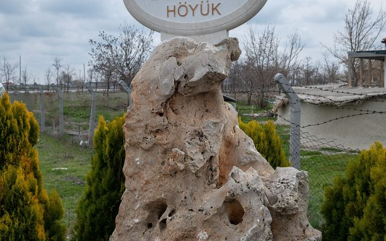
Siedlungshügel BoncukluKonya · Neolithikum Siedlungshügel HacılarBurdur · Neolithikum / Chalkolithikum
Siedlungshügel HacılarBurdur · Neolithikum / Chalkolithikum Ausgrabungsstätte KarahantepeŞanlıurfa · Neolithikum
Ausgrabungsstätte KarahantepeŞanlıurfa · Neolithikum Karain-HöhleAntalya · Paläolithikum
Karain-HöhleAntalya · Paläolithikum Tekkeköy MağaralarıSamsun · Paläolithikum
Tekkeköy MağaralarıSamsun · Paläolithikum Siedlungshügel Yeşilovaİzmir · Neolithikum
Siedlungshügel Yeşilovaİzmir · Neolithikum Siedlungshügel YumuktepeMersin · Neolithikum – Mittelalter
Siedlungshügel YumuktepeMersin · Neolithikum – Mittelalter Siedlungshügel ÇayönüDiyarbakır · Neolithikum
Siedlungshügel ÇayönüDiyarbakır · Neolithikum Öküzini-HöhleAntalya · PaläolithikumMuseum KırklareliKırklareli · Vorgeschichte / ThrakischArchäologisches Museum ŞanlıurfaŞanlıurfa · Neolithikum – Osmanisch
Öküzini-HöhleAntalya · PaläolithikumMuseum KırklareliKırklareli · Vorgeschichte / ThrakischArchäologisches Museum ŞanlıurfaŞanlıurfa · Neolithikum – OsmanischBronzezeit & Hethiter
v. Chr. 3000 – 1200 · 38 Orte
Ausgrabungsstätte ArslantepeMalatya · Chalkolithikum / Bronzezeit / Späthethitisch HattušaÇorum · Hethitisch
HattušaÇorum · Hethitisch TrojaÇanakkale · Bronzezeit / Römisch
TrojaÇanakkale · Bronzezeit / Römisch AcemhöyükAksaray · Bronzezeit / Asur Ticaret
AcemhöyükAksaray · Bronzezeit / Asur Ticaret Burg AfyonkarahisarAfyonkarahisar · Hethitisch – Osmanisch
Burg AfyonkarahisarAfyonkarahisar · Hethitisch – Osmanisch Museum und Ausgrabungsstätte AlacahöyükÇorum · Bronzezeit / Hethitisch
Museum und Ausgrabungsstätte AlacahöyükÇorum · Bronzezeit / Hethitisch Siedlungshügel AlişarYozgat · Bronzezeit / Hethitisch
Siedlungshügel AlişarYozgat · Bronzezeit / Hethitisch Aççana Höyük (Alalah)Hatay · Bronzezeit
Aççana Höyük (Alalah)Hatay · Bronzezeit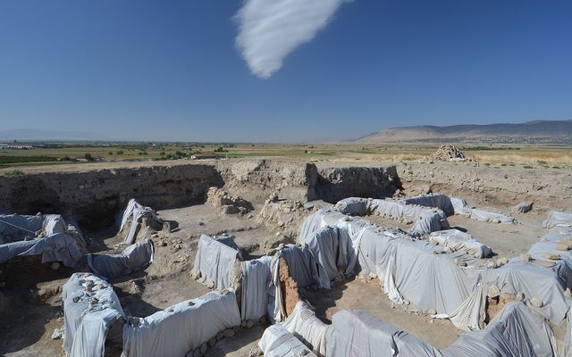
Siedlungshügel BeycesultanDenizli · Bronzezeit Dicle Tüneli (Birkleyn Mağaraları)Diyarbakır · Asur / Urartäisch
Dicle Tüneli (Birkleyn Mağaraları)Diyarbakır · Asur / Urartäisch Eflatunpınar Hitit Su AnıtıKonya · Hethitisch
Eflatunpınar Hitit Su AnıtıKonya · Hethitisch Ausgrabungsstätte Enkomi (Alasya)Gazimağusa · Bronzezeit
Ausgrabungsstätte Enkomi (Alasya)Gazimağusa · Bronzezeit Eğil Kalesi ve Peygamber TürbeleriDiyarbakır · Asur – Osmanisch
Eğil Kalesi ve Peygamber TürbeleriDiyarbakır · Asur – Osmanisch Fasıllar AnıtıKonya · Hethitisch
Fasıllar AnıtıKonya · Hethitisch Ausgrabungsstätte Fethiye TlosMuğla · Bronzezeit – Osmanisch
Ausgrabungsstätte Fethiye TlosMuğla · Bronzezeit – Osmanisch Ausgrabungsstätte HarranŞanlıurfa · Bronzezeit – Mittelalter
Ausgrabungsstätte HarranŞanlıurfa · Bronzezeit – Mittelalter Ausgrabungsstätte IassosMuğla · Bronzezeit – Byzantinisch
Ausgrabungsstätte IassosMuğla · Bronzezeit – Byzantinisch Archäologisches Museum Kaman KalehöyükKırşehir · Bronzezeit / Eisenzeit
Archäologisches Museum Kaman KalehöyükKırşehir · Bronzezeit / Eisenzeit Karabel Kaya Kabartmasıİzmir · Hethitisch (Arzawa)
Karabel Kaya Kabartmasıİzmir · Hethitisch (Arzawa) Museum und Ausgrabungsstätte Karatepe AslantaşOsmaniye · Späthethitisch (8. Jh. v. Chr.)
Museum und Ausgrabungsstätte Karatepe AslantaşOsmaniye · Späthethitisch (8. Jh. v. Chr.) Antike Stadt KarkamışGaziantep · Späthethitisch / Eisenzeit
Antike Stadt KarkamışGaziantep · Späthethitisch / Eisenzeit Ausgrabungsstätte KültepeKayseri · BronzezeitSiedlungshügel MaşatTokat · Hethitisch
Ausgrabungsstätte KültepeKayseri · BronzezeitSiedlungshügel MaşatTokat · Hethitisch Siedlungshügel OluzAmasya · Bronzezeit / Pers
Siedlungshügel OluzAmasya · Bronzezeit / Pers Siedlungshügel OylumKilis · Bronzezeit
Siedlungshügel OylumKilis · Bronzezeit Ausgrabungsstätte SalamisGazimağusa · Bronzezeit / Römisch / Byzantinisch
Ausgrabungsstätte SalamisGazimağusa · Bronzezeit / Römisch / Byzantinisch Sarissa (Kuşaklı) Hitit KentiSivas · Hethitisch
Sarissa (Kuşaklı) Hitit KentiSivas · Hethitisch Sirkeli Höyüğü ve Muwatalli KabartmasıAdana · Hethitisch
Sirkeli Höyüğü ve Muwatalli KabartmasıAdana · Hethitisch Tarsus GözlükuleMersin · Bronzezeit – Römisch
Tarsus GözlükuleMersin · Bronzezeit – Römisch Siedlungshügel TilmenGaziantep · Bronzezeit
Siedlungshügel TilmenGaziantep · Bronzezeit Ausgrabungsstätte YesemekGaziantep · SpäthethitischSiedlungshügel YumuktepeMersin · Neolithikum – Mittelalter
Ausgrabungsstätte YesemekGaziantep · SpäthethitischSiedlungshügel YumuktepeMersin · Neolithikum – Mittelalter Zincirli Höyük (Sam'al)Gaziantep · Späthethitisch / Arami
Zincirli Höyük (Sam'al)Gaziantep · Späthethitisch / Arami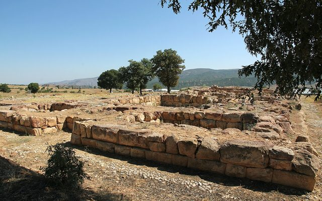
ŞapinuvaÇorum · Hethitisch Antike Stadt Şar (Komana)Adana · Hethitisch / Römisch
Antike Stadt Şar (Komana)Adana · Hethitisch / Römisch Archäologisches Museum Bodrum SualtıMuğla · Bronzezeit – Osmanisch
Archäologisches Museum Bodrum SualtıMuğla · Bronzezeit – Osmanisch Museum BoğazköyÇorum · HethitischArchäologisches Museum ŞanlıurfaŞanlıurfa · Neolithikum – Osmanisch
Museum BoğazköyÇorum · HethitischArchäologisches Museum ŞanlıurfaŞanlıurfa · Neolithikum – OsmanischKönigreiche der Eisenzeit
v. Chr. 1200 – 550 · 79 Orte
Ausgrabungsstätte ArslantepeMalatya · Chalkolithikum / Bronzezeit / Späthethitisch Ausgrabungsstätte XanthosAntalya · Lykisch
Ausgrabungsstätte XanthosAntalya · Lykisch Museum GordionAnkara · PhrygischBurg AfyonkarahisarAfyonkarahisar · Hethitisch – OsmanischAntike Stadt AkalissosAntalya · Lykisch / Römisch
Museum GordionAnkara · PhrygischBurg AfyonkarahisarAfyonkarahisar · Hethitisch – OsmanischAntike Stadt AkalissosAntalya · Lykisch / Römisch Burg Altıntepe UrartuErzincan · Urartäisch
Burg Altıntepe UrartuErzincan · Urartäisch Amintas Kaya MezarıMuğla · Lykisch (4. Jh. v. Chr.)
Amintas Kaya MezarıMuğla · Lykisch (4. Jh. v. Chr.)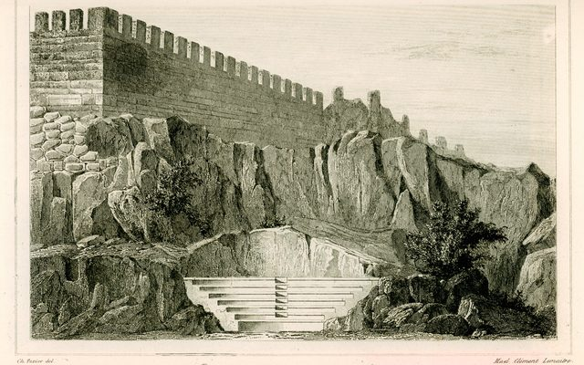
Antike Stadt AperlaiAntalya · Lykisch / Römisch Antike Stadt Apollonia (Likya)Antalya · LykischAntike Stadt ArneaiAntalya · Lykisch / Römisch
Antike Stadt Apollonia (Likya)Antalya · LykischAntike Stadt ArneaiAntalya · Lykisch / Römisch Antike Stadt ArsadaMuğla · Lykisch
Antike Stadt ArsadaMuğla · Lykisch Ausgrabungsstätte ArykandaAntalya · Lykisch / Römisch
Ausgrabungsstätte ArykandaAntalya · Lykisch / Römisch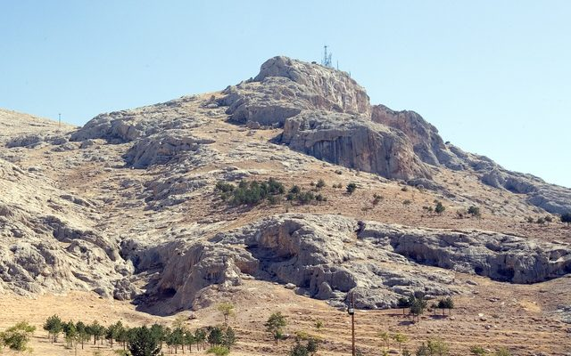
Burg AyanisVan · Urartäisch Bin Tepe Lidya TümülüsleriManisa · Lydisch
Bin Tepe Lidya TümülüsleriManisa · Lydisch Antike Stadt DaskyleionBalıkesir · Pers / HellenistischDicle Tüneli (Birkleyn Mağaraları)Diyarbakır · Asur / UrartäischEğil Kalesi ve Peygamber TürbeleriDiyarbakır · Asur – Osmanisch
Antike Stadt DaskyleionBalıkesir · Pers / HellenistischDicle Tüneli (Birkleyn Mağaraları)Diyarbakır · Asur / UrartäischEğil Kalesi ve Peygamber TürbeleriDiyarbakır · Asur – Osmanisch Ausgrabungsstätte Fethiye LetoonMuğla · Lykisch / Römisch
Ausgrabungsstätte Fethiye LetoonMuğla · Lykisch / Römisch Ausgrabungsstätte Fethiye PınaraMuğla · Lykisch / RömischAusgrabungsstätte Fethiye TlosMuğla · Bronzezeit – OsmanischAntike Stadt GagaeAntalya · Lykisch / Byzantinisch
Ausgrabungsstätte Fethiye PınaraMuğla · Lykisch / RömischAusgrabungsstätte Fethiye TlosMuğla · Bronzezeit – OsmanischAntike Stadt GagaeAntalya · Lykisch / Byzantinisch Antike Stadt GergaAydın · Karisch
Antike Stadt GergaAydın · Karisch Burg HarputElâzığ · Urartäisch / MittelalterAusgrabungsstätte HarranŞanlıurfa · Bronzezeit – MittelalterAntike Stadt HyllarimaMuğla · Karisch / HellenistischAusgrabungsstätte IassosMuğla · Bronzezeit – Byzantinisch
Burg HarputElâzığ · Urartäisch / MittelalterAusgrabungsstätte HarranŞanlıurfa · Bronzezeit – MittelalterAntike Stadt HyllarimaMuğla · Karisch / HellenistischAusgrabungsstätte IassosMuğla · Bronzezeit – Byzantinisch Antike Stadt IdebessosAntalya · Lykisch / Römisch
Antike Stadt IdebessosAntalya · Lykisch / Römisch Antike Stadt KadyandaMuğla · Lykisch / RömischArchäologisches Museum Kaman KalehöyükKırşehir · Bronzezeit / EisenzeitAntike Stadt KandybaAntalya · LykischMuseum und Ausgrabungsstätte Karatepe AslantaşOsmaniye · Späthethitisch (8. Jh. v. Chr.)Antike Stadt KarkamışGaziantep · Späthethitisch / Eisenzeit
Antike Stadt KadyandaMuğla · Lykisch / RömischArchäologisches Museum Kaman KalehöyükKırşehir · Bronzezeit / EisenzeitAntike Stadt KandybaAntalya · LykischMuseum und Ausgrabungsstätte Karatepe AslantaşOsmaniye · Späthethitisch (8. Jh. v. Chr.)Antike Stadt KarkamışGaziantep · Späthethitisch / Eisenzeit Ausgrabungsstätte KaunosMuğla · Karisch / Hellenistisch / Römisch
Ausgrabungsstätte KaunosMuğla · Karisch / Hellenistisch / Römisch Versunkene Stadt KekovaAntalya · Lykisch / Römisch
Versunkene Stadt KekovaAntalya · Lykisch / Römisch Antike Stadt KeramosMuğla · Karisch / Römisch
Antike Stadt KeramosMuğla · Karisch / Römisch Antike Stadt KerkenesYozgat · Phrygisch / EisenzeitAntike Stadt KorydallaAntalya · Lykisch / RömischMuseum und Ausgrabungsstätte Kral MezarlarıGazimağusa · Eisenzeit (8–7. Jh. v. Chr.)
Antike Stadt KerkenesYozgat · Phrygisch / EisenzeitAntike Stadt KorydallaAntalya · Lykisch / RömischMuseum und Ausgrabungsstätte Kral MezarlarıGazimağusa · Eisenzeit (8–7. Jh. v. Chr.) Antike Stadt KyaneaiAntalya · Lykisch / Römisch
Antike Stadt KyaneaiAntalya · Lykisch / Römisch Ausgrabungsstätte LabraundaMuğla · Karisch / Hellenistisch
Ausgrabungsstätte LabraundaMuğla · Karisch / Hellenistisch Likya Uygarlıkları Müzesi ve Andrıake ÖrenyeriAntalya · Lykisch / Römisch
Likya Uygarlıkları Müzesi ve Andrıake ÖrenyeriAntalya · Lykisch / Römisch Ausgrabungsstätte LimyraAntalya · Lykisch / Römisch
Ausgrabungsstätte LimyraAntalya · Lykisch / Römisch Mher Kapısı (Meher Kapı)Van · Urartäisch
Mher Kapısı (Meher Kapı)Van · Urartäisch Ausgrabungsstätte Midas YazılıkayaEskişehir · PhrygischMilas Uzunyuva (Hekatomnos Anıt Mezarı)Muğla · Karisch
Ausgrabungsstätte Midas YazılıkayaEskişehir · PhrygischMilas Uzunyuva (Hekatomnos Anıt Mezarı)Muğla · Karisch Milas Uzunyuva Anıt Mezarı ve Müze KompleksiMuğla · Karisch (4. Jh. v. Chr.)
Milas Uzunyuva Anıt Mezarı ve Müze KompleksiMuğla · Karisch (4. Jh. v. Chr.)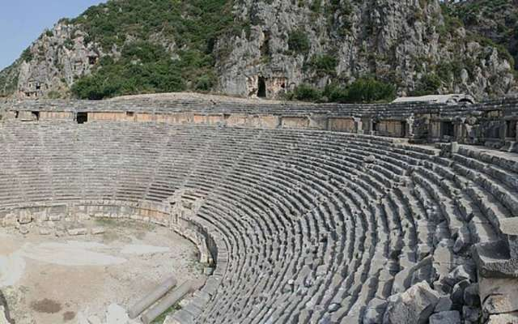
Ausgrabungsstätte MyraAntalya · Lykisch / RömischAntike Stadt OinoandaMuğla · Lykisch / RömischSiedlungshügel OluzAmasya · Bronzezeit / Pers Ausgrabungsstätte OlymposAntalya · Lykisch / Römisch
Ausgrabungsstätte OlymposAntalya · Lykisch / Römisch Ausgrabungsstätte PataraAntalya · Lykisch / Römisch
Ausgrabungsstätte PataraAntalya · Lykisch / Römisch Ausgrabungsstätte PessinusEskişehir · Phrygisch / Hellenistisch / Römisch
Ausgrabungsstätte PessinusEskişehir · Phrygisch / Hellenistisch / Römisch Ausgrabungsstätte PhaselisAntalya · Lykisch / Römisch
Ausgrabungsstätte PhaselisAntalya · Lykisch / Römisch Antike Stadt PhellosAntalya · Lykisch
Antike Stadt PhellosAntalya · Lykisch Burg PydnaiMuğla · Lykisch / Hellenistisch
Burg PydnaiMuğla · Lykisch / Hellenistisch Antike Stadt RhodiapolisAntalya · Lykisch / Römisch
Antike Stadt RhodiapolisAntalya · Lykisch / Römisch Ausgrabungsstätte SardesManisa · Lydisch / Römisch
Ausgrabungsstätte SardesManisa · Lydisch / Römisch Antike Stadt SebedaAntalya · Lykisch
Antike Stadt SebedaAntalya · Lykisch Antike Stadt SidymaMuğla · Lykisch / Römisch
Antike Stadt SidymaMuğla · Lykisch / Römisch Ausgrabungsstätte SimenaAntalya · Lykisch / Byzantinisch
Ausgrabungsstätte SimenaAntalya · Lykisch / Byzantinisch Antike Stadt SuraAntalya · LykischTarsus GözlükuleMersin · Bronzezeit – Römisch
Antike Stadt SuraAntalya · LykischTarsus GözlükuleMersin · Bronzezeit – Römisch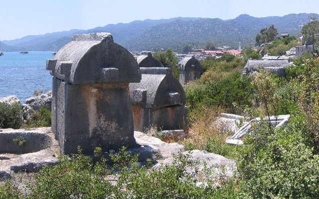
Antike Stadt TeimiussaAntalya · LykischAntike Stadt TrysaAntalya · Lykisch Antike Stadt TyberissosAntalya · Lykisch
Antike Stadt TyberissosAntalya · Lykisch Burg VanVan · Urartäisch – OsmanischAusgrabungsstätte YesemekGaziantep · SpäthethitischSiedlungshügel YumuktepeMersin · Neolithikum – Mittelalter
Burg VanVan · Urartäisch – OsmanischAusgrabungsstätte YesemekGaziantep · SpäthethitischSiedlungshügel YumuktepeMersin · Neolithikum – Mittelalter YılankaleAdana · Kilikya Ermeni KrallığıZincirli Höyük (Sam'al)Gaziantep · Späthethitisch / Arami
YılankaleAdana · Kilikya Ermeni KrallığıZincirli Höyük (Sam'al)Gaziantep · Späthethitisch / Arami Burg ÇavuştepeVan · Urartäisch (8–7. Jh. v. Chr.)Archäologisches Museum Bodrum SualtıMuğla · Bronzezeit – Osmanisch
Burg ÇavuştepeVan · Urartäisch (8–7. Jh. v. Chr.)Archäologisches Museum Bodrum SualtıMuğla · Bronzezeit – Osmanisch Museum ErzincanErzincan · Urartäisch / Mehrere EpochenMuseum FethiyeMuğla · Lykisch / RömischMuseum KırklareliKırklareli · Vorgeschichte / Thrakisch
Museum ErzincanErzincan · Urartäisch / Mehrere EpochenMuseum FethiyeMuğla · Lykisch / RömischMuseum KırklareliKırklareli · Vorgeschichte / Thrakisch Denkmalmuseum Muğla Bodrum MausoleiumMuğla · Karisch (4. Jh. v. Chr.)Museum UşakUşak · Lydisch / Mehrere Epochen
Denkmalmuseum Muğla Bodrum MausoleiumMuğla · Karisch (4. Jh. v. Chr.)Museum UşakUşak · Lydisch / Mehrere Epochen Museum VanVan · Urartäisch / Mehrere EpochenArchäologisches Museum ŞanlıurfaŞanlıurfa · Neolithikum – Osmanisch
Museum VanVan · Urartäisch / Mehrere EpochenArchäologisches Museum ŞanlıurfaŞanlıurfa · Neolithikum – OsmanischKlassik & Hellenismus
v. Chr. 550 – 30 · 104 Orte
 Museum und Ausgrabungsstätte AfrodisiasAydın · Hellenistisch / Römisch
Museum und Ausgrabungsstätte AfrodisiasAydın · Hellenistisch / Römisch Akropolis von Pergamonİzmir · Hellenistisch / Römisch
Akropolis von Pergamonİzmir · Hellenistisch / Römisch Asklepieion von Pergamonİzmir · Hellenistisch / Römisch
Asklepieion von Pergamonİzmir · Hellenistisch / Römisch Ephesosİzmir · Hellenistisch / Römisch
Ephesosİzmir · Hellenistisch / Römisch Hierapolis (Pamukkale)Denizli · Hellenistisch / Römisch
Hierapolis (Pamukkale)Denizli · Hellenistisch / Römisch Nemrut DağıAdıyaman · Hellenistisch (Kommagene)Burg AfyonkarahisarAfyonkarahisar · Hethitisch – Osmanisch
Nemrut DağıAdıyaman · Hellenistisch (Kommagene)Burg AfyonkarahisarAfyonkarahisar · Hethitisch – Osmanisch Ausgrabungsstätte Agoraİzmir · Hellenistisch / RömischAusgrabungsstätte AigaiManisa · Hellenistisch / Römisch
Ausgrabungsstätte Agoraİzmir · Hellenistisch / RömischAusgrabungsstätte AigaiManisa · Hellenistisch / Römisch Ausgrabungsstätte AlabandaAydın · Hellenistisch / Römisch
Ausgrabungsstätte AlabandaAydın · Hellenistisch / Römisch Ausgrabungsstätte AlaşehirManisa · Hellenistisch / Byzantinisch
Ausgrabungsstätte AlaşehirManisa · Hellenistisch / Byzantinisch Ausgrabungsstätte Alexandria TroasÇanakkale · Hellenistisch / Römisch
Ausgrabungsstätte Alexandria TroasÇanakkale · Hellenistisch / Römisch Ausgrabungsstätte AlindaAydın · Hellenistisch / Römisch
Ausgrabungsstätte AlindaAydın · Hellenistisch / Römisch Amisos Tepesi (Amisos Antik Kenti)Samsun · Hellenistisch
Amisos Tepesi (Amisos Antik Kenti)Samsun · Hellenistisch Antike Stadt AmosMuğla · HellenistischAntike Stadt AmyzonAydın · Hellenistisch
Antike Stadt AmosMuğla · HellenistischAntike Stadt AmyzonAydın · Hellenistisch Antike Stadt Antalya SyedraAntalya · Hellenistisch / Römisch
Antike Stadt Antalya SyedraAntalya · Hellenistisch / Römisch Ausgrabungsstätte AntiocheiaIsparta · Hellenistisch / Römisch
Ausgrabungsstätte AntiocheiaIsparta · Hellenistisch / Römisch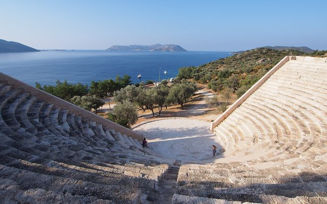
Antiphellos Antik Tiyatrosu (Kaş)Antalya · Hellenistisch / Römisch Ausgrabungsstätte Apollon SmintheionÇanakkale · Hellenistisch
Ausgrabungsstätte Apollon SmintheionÇanakkale · Hellenistisch Ausgrabungsstätte ArsemeiaAdıyaman · Hellenistisch (Kommagene)
Ausgrabungsstätte ArsemeiaAdıyaman · Hellenistisch (Kommagene) Ausgrabungsstätte AssosÇanakkale · Archaik / Hellenistisch
Ausgrabungsstätte AssosÇanakkale · Archaik / Hellenistisch Antike Stadt BargyliaMuğla · Hellenistisch / Römisch
Antike Stadt BargyliaMuğla · Hellenistisch / Römisch Ausgrabungsstätte BlaundosUşak · Hellenistisch / Römisch
Ausgrabungsstätte BlaundosUşak · Hellenistisch / Römisch Antikes Theater BodrumMuğla · Hellenistisch / RömischAntike Stadt DaskyleionBalıkesir · Pers / Hellenistisch
Antikes Theater BodrumMuğla · Hellenistisch / RömischAntike Stadt DaskyleionBalıkesir · Pers / Hellenistisch Ausgrabungsstätte Denizli TripolisDenizli · Hellenistisch / Römisch
Ausgrabungsstätte Denizli TripolisDenizli · Hellenistisch / Römisch Tempel des Didim ApollonAydın · Hellenistisch / RömischAntike Stadt Dülük (Doliche)Gaziantep · Römisch / Kommagene
Tempel des Didim ApollonAydın · Hellenistisch / RömischAntike Stadt Dülük (Doliche)Gaziantep · Römisch / Kommagene Antike Stadt Erythraiİzmir · Hellenistisch / Römisch
Antike Stadt Erythraiİzmir · Hellenistisch / Römisch Eski Smyrna (Bayraklı Höyüğü)İzmir · ArchaikEğil Kalesi ve Peygamber TürbeleriDiyarbakır · Asur – OsmanischAusgrabungsstätte Fethiye TlosMuğla · Bronzezeit – OsmanischAusgrabungsstätte Filyos(Tios)Zonguldak · Hellenistisch – Byzantinisch
Eski Smyrna (Bayraklı Höyüğü)İzmir · ArchaikEğil Kalesi ve Peygamber TürbeleriDiyarbakır · Asur – OsmanischAusgrabungsstätte Fethiye TlosMuğla · Bronzezeit – OsmanischAusgrabungsstätte Filyos(Tios)Zonguldak · Hellenistisch – Byzantinisch Gölyazı (Apollonia ad Rhyndacum)Bursa · Hellenistisch / RömischAusgrabungsstätte HarranŞanlıurfa · Bronzezeit – Mittelalter
Gölyazı (Apollonia ad Rhyndacum)Bursa · Hellenistisch / RömischAusgrabungsstätte HarranŞanlıurfa · Bronzezeit – Mittelalter Antike Stadt Herakleia (Latmos)Muğla · Hellenistisch / Byzantinisch
Antike Stadt Herakleia (Latmos)Muğla · Hellenistisch / Byzantinisch Antike Stadt Herakleia SalbakeDenizli · Hellenistisch / RömischAntike Stadt HyllarimaMuğla · Karisch / HellenistischAusgrabungsstätte IassosMuğla · Bronzezeit – ByzantinischKadifekaleİzmir · Hellenistisch / Osmanisch
Antike Stadt Herakleia SalbakeDenizli · Hellenistisch / RömischAntike Stadt HyllarimaMuğla · Karisch / HellenistischAusgrabungsstätte IassosMuğla · Bronzezeit – ByzantinischKadifekaleİzmir · Hellenistisch / Osmanisch Ausgrabungsstätte Kahta YenikaleAdıyaman · Kommagene / Mittelalter
Ausgrabungsstätte Kahta YenikaleAdıyaman · Kommagene / Mittelalter Ausgrabungsstätte Kanlı DivaneMersin · Hellenistisch / Römisch / Byzantinisch
Ausgrabungsstätte Kanlı DivaneMersin · Hellenistisch / Römisch / Byzantinisch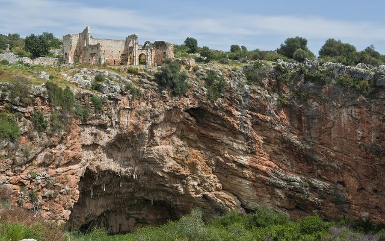
Kanlıdivane (Kanytelis)Mersin · Hellenistisch / Byzantinisch Kapılıkaya Kaya MezarıÇorum · Paflagonya / Hellenistisch
Kapılıkaya Kaya MezarıÇorum · Paflagonya / Hellenistisch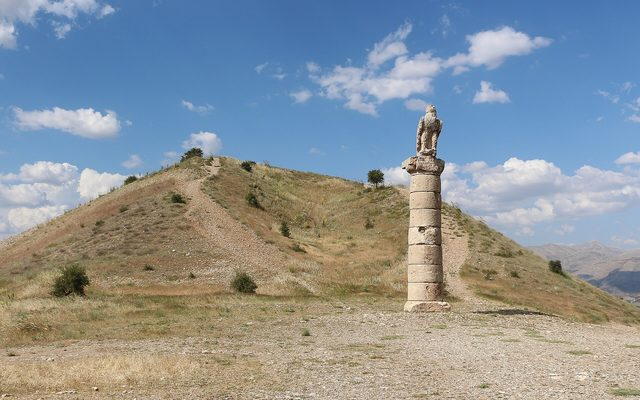
Karakuş TümülüsüAdıyaman · Kommagene Ausgrabungsstätte KastabalaOsmaniye · Hellenistisch / Römisch / MittelalterAusgrabungsstätte KaunosMuğla · Karisch / Hellenistisch / Römisch
Ausgrabungsstätte KastabalaOsmaniye · Hellenistisch / Römisch / MittelalterAusgrabungsstätte KaunosMuğla · Karisch / Hellenistisch / Römisch Ausgrabungsstätte Klarosİzmir · Archaik / RömischAusgrabungsstätte Klazomenaiİzmir · Archaik
Ausgrabungsstätte Klarosİzmir · Archaik / RömischAusgrabungsstätte Klazomenaiİzmir · Archaik Antike Stadt Kolophonİzmir · Archaik / HellenistischAntike Stadt Komana PontikaTokat · Hellenistisch / Römisch
Antike Stadt Kolophonİzmir · Archaik / HellenistischAntike Stadt Komana PontikaTokat · Hellenistisch / Römisch Antike Stadt Kymeİzmir · Archaik / Römisch
Antike Stadt Kymeİzmir · Archaik / Römisch Antike Stadt KyzikosBalıkesir · Hellenistisch / RömischAusgrabungsstätte LabraundaMuğla · Karisch / Hellenistisch
Antike Stadt KyzikosBalıkesir · Hellenistisch / RömischAusgrabungsstätte LabraundaMuğla · Karisch / Hellenistisch Ausgrabungsstätte LaginaMuğla · Hellenistisch / Römisch
Ausgrabungsstätte LaginaMuğla · Hellenistisch / Römisch Ausgrabungsstätte LaodikeiaDenizli · Hellenistisch / Römisch
Ausgrabungsstätte LaodikeiaDenizli · Hellenistisch / Römisch Antike Stadt LorymaMuğla · Hellenistisch
Antike Stadt LorymaMuğla · Hellenistisch Antike Stadt MagarsusAdana · Hellenistisch / Römisch
Antike Stadt MagarsusAdana · Hellenistisch / Römisch Ausgrabungsstätte MagnesiaAydın · Hellenistisch / Römisch
Ausgrabungsstätte MagnesiaAydın · Hellenistisch / Römisch Manisa Akhisar Müzesi ve Akhisar Tepe MezarlığıManisa · Hellenistisch / Römisch
Manisa Akhisar Müzesi ve Akhisar Tepe MezarlığıManisa · Hellenistisch / Römisch Ausgrabungsstätte Metropolisİzmir · Hellenistisch / Römisch
Ausgrabungsstätte Metropolisİzmir · Hellenistisch / Römisch Ausgrabungsstätte Milas EuromosMuğla · Hellenistisch / Römisch
Ausgrabungsstätte Milas EuromosMuğla · Hellenistisch / Römisch Ausgrabungsstätte MiletAydın · Archaik / Römisch
Ausgrabungsstätte MiletAydın · Archaik / Römisch Ausgrabungsstätte Muğla KnidosMuğla · Klassisch / Hellenistisch
Ausgrabungsstätte Muğla KnidosMuğla · Klassisch / Hellenistisch Antike Stadt MyndosMuğla · HellenistischAntike Stadt NeandreiaÇanakkale · Archaik / Hellenistisch
Antike Stadt MyndosMuğla · HellenistischAntike Stadt NeandreiaÇanakkale · Archaik / Hellenistisch Antike Stadt Notionİzmir · Hellenistisch / Römisch
Antike Stadt Notionİzmir · Hellenistisch / Römisch Ausgrabungsstätte Nysa SultanhisarAydın · Hellenistisch / Römisch
Ausgrabungsstätte Nysa SultanhisarAydın · Hellenistisch / Römisch Antike Stadt OlbaMersin · Hellenistisch / Römisch
Antike Stadt OlbaMersin · Hellenistisch / Römisch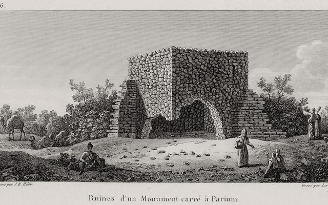
Antike Stadt ParionÇanakkale · Hellenistisch / RömischAntike Stadt PednelissosAntalya · Hellenistisch / Römisch Ausgrabungsstätte PergeAntalya · Hellenistisch / RömischAntike Stadt PerpereneBalıkesir · Hellenistisch / Römisch
Ausgrabungsstätte PergeAntalya · Hellenistisch / RömischAntike Stadt PerpereneBalıkesir · Hellenistisch / Römisch Ausgrabungsstätte PerreAdıyaman · Kommagene / RömischAusgrabungsstätte PessinusEskişehir · Phrygisch / Hellenistisch / Römisch
Ausgrabungsstätte PerreAdıyaman · Kommagene / RömischAusgrabungsstätte PessinusEskişehir · Phrygisch / Hellenistisch / Römisch Antike Stadt Phokaia (Foça)İzmir · Archaik / Römisch
Antike Stadt Phokaia (Foça)İzmir · Archaik / Römisch Antike Stadt Pisidia AntiokheiaIsparta · Hellenistisch / Römisch
Antike Stadt Pisidia AntiokheiaIsparta · Hellenistisch / Römisch Ausgrabungsstätte PrieneAydın · HellenistischBurg PydnaiMuğla · Lykisch / Hellenistisch
Ausgrabungsstätte PrieneAydın · HellenistischBurg PydnaiMuğla · Lykisch / Hellenistisch Ausgrabungsstätte SagalassosBurdur · Hellenistisch / Römisch
Ausgrabungsstätte SagalassosBurdur · Hellenistisch / Römisch Ausgrabungsstätte Sedir AdasıMuğla · Hellenistisch / Römisch
Ausgrabungsstätte Sedir AdasıMuğla · Hellenistisch / Römisch Antike Stadt Seleukeia (Pamfilya)Antalya · Hellenistisch / Römisch
Antike Stadt Seleukeia (Pamfilya)Antalya · Hellenistisch / Römisch Antike Stadt SelgeAntalya · Hellenistisch / Römisch
Antike Stadt SelgeAntalya · Hellenistisch / Römisch Ausgrabungsstätte SideAntalya · Hellenistisch / Römisch
Ausgrabungsstätte SideAntalya · Hellenistisch / Römisch Antike Stadt SillyonAntalya · Hellenistisch / RömischSofraz Anıt MezarıAdıyaman · Hellenistisch / Römisch
Antike Stadt SillyonAntalya · Hellenistisch / RömischSofraz Anıt MezarıAdıyaman · Hellenistisch / Römisch Antike Stadt Soli PompeiopolisMersin · Hellenistisch / Römisch
Antike Stadt Soli PompeiopolisMersin · Hellenistisch / Römisch Ausgrabungsstätte SoliLefke · Archaik / Römisch
Ausgrabungsstätte SoliLefke · Archaik / Römisch Ausgrabungsstätte StratonikeiaMuğla · Hellenistisch – OsmanischTarsus GözlükuleMersin · Bronzezeit – Römisch
Ausgrabungsstätte StratonikeiaMuğla · Hellenistisch – OsmanischTarsus GözlükuleMersin · Bronzezeit – Römisch Ausgrabungsstätte Teosİzmir · Archaik / Hellenistisch
Ausgrabungsstätte Teosİzmir · Archaik / Hellenistisch Ausgrabungsstätte TermessosAntalya · Hellenistisch / Römisch
Ausgrabungsstätte TermessosAntalya · Hellenistisch / Römisch Antike Stadt TralleisAydın · Hellenistisch / Römisch
Antike Stadt TralleisAydın · Hellenistisch / Römisch Ausgrabungsstätte UzuncaburçMersin · Hellenistisch / RömischBurg VanVan · Urartäisch – Osmanisch
Ausgrabungsstätte UzuncaburçMersin · Hellenistisch / RömischBurg VanVan · Urartäisch – Osmanisch Vouni-PalastLefke · Klassisch (5. Jh. v. Chr.)Siedlungshügel YumuktepeMersin · Neolithikum – Mittelalter
Vouni-PalastLefke · Klassisch (5. Jh. v. Chr.)Siedlungshügel YumuktepeMersin · Neolithikum – Mittelalter Ausgrabungsstätte ZeugmaGaziantep · Hellenistisch / Römisch
Ausgrabungsstätte ZeugmaGaziantep · Hellenistisch / Römisch Antike Siedlung ÇatıörenMersin · Hellenistisch / RömischAusgrabungsstätte ÇevlikHatay · Hellenistisch / Römisch
Antike Siedlung ÇatıörenMersin · Hellenistisch / RömischAusgrabungsstätte ÇevlikHatay · Hellenistisch / Römisch Burg ŞanlıurfaŞanlıurfa · Hellenistisch – MittelalterArchäologisches Museum Bodrum SualtıMuğla · Bronzezeit – OsmanischArchäologisches Museum ŞanlıurfaŞanlıurfa · Neolithikum – Osmanisch
Burg ŞanlıurfaŞanlıurfa · Hellenistisch – MittelalterArchäologisches Museum Bodrum SualtıMuğla · Bronzezeit – OsmanischArchäologisches Museum ŞanlıurfaŞanlıurfa · Neolithikum – OsmanischRömische Zeit
v. Chr. 30 – n. Chr. 330 · 187 Orte
Museum und Ausgrabungsstätte AfrodisiasAydın · Hellenistisch / RömischAkropolis von Pergamonİzmir · Hellenistisch / RömischAsklepieion von Pergamonİzmir · Hellenistisch / Römisch Bergama Kızılavluİzmir · Römisch / ByzantinischEphesosİzmir · Hellenistisch / RömischHierapolis (Pamukkale)Denizli · Hellenistisch / RömischTrojaÇanakkale · Bronzezeit / Römisch
Bergama Kızılavluİzmir · Römisch / ByzantinischEphesosİzmir · Hellenistisch / RömischHierapolis (Pamukkale)Denizli · Hellenistisch / RömischTrojaÇanakkale · Bronzezeit / Römisch Antike Stadt AdadaIsparta · Römisch
Antike Stadt AdadaIsparta · Römisch AdamkayalarMersin · RömischBurg AfyonkarahisarAfyonkarahisar · Hethitisch – OsmanischAusgrabungsstätte Agoraİzmir · Hellenistisch / RömischAusgrabungsstätte AigaiManisa · Hellenistisch / Römisch
AdamkayalarMersin · RömischBurg AfyonkarahisarAfyonkarahisar · Hethitisch – OsmanischAusgrabungsstätte Agoraİzmir · Hellenistisch / RömischAusgrabungsstätte AigaiManisa · Hellenistisch / Römisch Ausgrabungsstätte AizanoiKütahya · RömischAntike Stadt AkalissosAntalya · Lykisch / Römisch
Ausgrabungsstätte AizanoiKütahya · RömischAntike Stadt AkalissosAntalya · Lykisch / Römisch Ausgrabungsstätte AkkaleMersin · Römisch / ByzantinischAusgrabungsstätte AlabandaAydın · Hellenistisch / RömischAusgrabungsstätte Alexandria TroasÇanakkale · Hellenistisch / RömischAusgrabungsstätte AlindaAydın · Hellenistisch / Römisch
Ausgrabungsstätte AkkaleMersin · Römisch / ByzantinischAusgrabungsstätte AlabandaAydın · Hellenistisch / RömischAusgrabungsstätte Alexandria TroasÇanakkale · Hellenistisch / RömischAusgrabungsstätte AlindaAydın · Hellenistisch / Römisch Antike Stadt AmoriumAfyonkarahisar · Römisch / Byzantinisch
Antike Stadt AmoriumAfyonkarahisar · Römisch / Byzantinisch Ausgrabungsstätte AnavarzaAdana · Römisch / Byzantinisch
Ausgrabungsstätte AnavarzaAdana · Römisch / Byzantinisch Ausgrabungsstätte AnemuriumMersin · Römisch / Byzantinisch
Ausgrabungsstätte AnemuriumMersin · Römisch / Byzantinisch Burg AnkaraAnkara · Römisch – Osmanisch
Burg AnkaraAnkara · Römisch – Osmanisch Ankara Roma TiyatrosuAnkara · RömischAntike Stadt Antalya SyedraAntalya · Hellenistisch / Römisch
Ankara Roma TiyatrosuAnkara · RömischAntike Stadt Antalya SyedraAntalya · Hellenistisch / Römisch Antike Stadt AntandrosBalıkesir · RömischAusgrabungsstätte AntiocheiaIsparta · Hellenistisch / Römisch
Antike Stadt AntandrosBalıkesir · RömischAusgrabungsstätte AntiocheiaIsparta · Hellenistisch / Römisch Antike Stadt Antiokheia ad CragumAntalya · RömischAntiphellos Antik Tiyatrosu (Kaş)Antalya · Hellenistisch / RömischAntike Stadt AperlaiAntalya · Lykisch / Römisch
Antike Stadt Antiokheia ad CragumAntalya · RömischAntiphellos Antik Tiyatrosu (Kaş)Antalya · Hellenistisch / RömischAntike Stadt AperlaiAntalya · Lykisch / Römisch Antike Stadt AriassosAntalya · RömischAntike Stadt ArneaiAntalya · Lykisch / RömischAusgrabungsstätte ArykandaAntalya · Lykisch / Römisch
Antike Stadt AriassosAntalya · RömischAntike Stadt ArneaiAntalya · Lykisch / RömischAusgrabungsstätte ArykandaAntalya · Lykisch / Römisch AspendosAntalya · Römisch
AspendosAntalya · Römisch Tempel des AugustusAnkara · RömischAntike Stadt BalburaBurdur · RömischAntike Stadt BargyliaMuğla · Hellenistisch / RömischAusgrabungsstätte BlaundosUşak · Hellenistisch / RömischAntikes Theater BodrumMuğla · Hellenistisch / Römisch
Tempel des AugustusAnkara · RömischAntike Stadt BalburaBurdur · RömischAntike Stadt BargyliaMuğla · Hellenistisch / RömischAusgrabungsstätte BlaundosUşak · Hellenistisch / RömischAntikes Theater BodrumMuğla · Hellenistisch / Römisch Bozdoğan Kemeriİstanbul · Römisch
Bozdoğan Kemeriİstanbul · Römisch Cendere-BrückeAdıyaman · RömischAusgrabungsstätte Denizli TripolisDenizli · Hellenistisch / RömischSiedlungshügel DerbeKaraman · Römisch / ByzantinischTempel des Didim ApollonAydın · Hellenistisch / Römisch
Cendere-BrückeAdıyaman · RömischAusgrabungsstätte Denizli TripolisDenizli · Hellenistisch / RömischSiedlungshügel DerbeKaraman · Römisch / ByzantinischTempel des Didim ApollonAydın · Hellenistisch / Römisch Diyarbakır SurlarıDiyarbakır · Römisch – OsmanischAntike Stadt Dülük (Doliche)Gaziantep · Römisch / Kommagene
Diyarbakır SurlarıDiyarbakır · Römisch – OsmanischAntike Stadt Dülük (Doliche)Gaziantep · Römisch / Kommagene Edirne Makedonya-TurmEdirne · Römisch / Byzantinisch / Osmanisch
Edirne Makedonya-TurmEdirne · Römisch / Byzantinisch / Osmanisch Efes Örenyeri-Yamaçevlerİzmir · Römisch / Byzantinisch
Efes Örenyeri-Yamaçevlerİzmir · Römisch / Byzantinisch Antike Stadt Elaiussa SebasteMersin · RömischAntike Stadt Erythraiİzmir · Hellenistisch / RömischAntike Stadt EtennaAntalya · Römisch / ByzantinischEğil Kalesi ve Peygamber TürbeleriDiyarbakır · Asur – OsmanischAusgrabungsstätte Fethiye LetoonMuğla · Lykisch / RömischAusgrabungsstätte Fethiye PınaraMuğla · Lykisch / RömischAusgrabungsstätte Fethiye TlosMuğla · Bronzezeit – OsmanischAusgrabungsstätte Filyos(Tios)Zonguldak · Hellenistisch – ByzantinischGermanicia Mozaikli AlanKahramanmaraş · Römisch
Antike Stadt Elaiussa SebasteMersin · RömischAntike Stadt Erythraiİzmir · Hellenistisch / RömischAntike Stadt EtennaAntalya · Römisch / ByzantinischEğil Kalesi ve Peygamber TürbeleriDiyarbakır · Asur – OsmanischAusgrabungsstätte Fethiye LetoonMuğla · Lykisch / RömischAusgrabungsstätte Fethiye PınaraMuğla · Lykisch / RömischAusgrabungsstätte Fethiye TlosMuğla · Bronzezeit – OsmanischAusgrabungsstätte Filyos(Tios)Zonguldak · Hellenistisch – ByzantinischGermanicia Mozaikli AlanKahramanmaraş · Römisch Ausgrabungsstätte GökkaleMersin · Römisch / ByzantinischGölyazı (Apollonia ad Rhyndacum)Bursa · Hellenistisch / Römisch
Ausgrabungsstätte GökkaleMersin · Römisch / ByzantinischGölyazı (Apollonia ad Rhyndacum)Bursa · Hellenistisch / Römisch Gümüşkesen Anıt MezarıMuğla · Römisch
Gümüşkesen Anıt MezarıMuğla · Römisch Hadrian KapısıAntalya · RömischAusgrabungsstätte HadrianopolisKarabük · Römisch / ByzantinischAusgrabungsstätte HarranŞanlıurfa · Bronzezeit – MittelalterAntike Stadt Herakleia SalbakeDenizli · Hellenistisch / RömischAusgrabungsstätte IassosMuğla · Bronzezeit – ByzantinischAntike Stadt IdebessosAntalya · Lykisch / Römisch
Hadrian KapısıAntalya · RömischAusgrabungsstätte HadrianopolisKarabük · Römisch / ByzantinischAusgrabungsstätte HarranŞanlıurfa · Bronzezeit – MittelalterAntike Stadt Herakleia SalbakeDenizli · Hellenistisch / RömischAusgrabungsstätte IassosMuğla · Bronzezeit – ByzantinischAntike Stadt IdebessosAntalya · Lykisch / Römisch Antike Stadt IotapeAntalya · RömischAntike Stadt IsindaAntalya · Pisidya / Römisch
Antike Stadt IotapeAntalya · RömischAntike Stadt IsindaAntalya · Pisidya / Römisch Juliopolis NekropolüAnkara · Römisch / ByzantinischAntike Stadt KadyandaMuğla · Lykisch / RömischAusgrabungsstätte Kanlı DivaneMersin · Hellenistisch / Römisch / Byzantinisch
Juliopolis NekropolüAnkara · Römisch / ByzantinischAntike Stadt KadyandaMuğla · Lykisch / RömischAusgrabungsstätte Kanlı DivaneMersin · Hellenistisch / Römisch / Byzantinisch Antike Siedlung KarakabaklıMersin · Römisch / ByzantinischAusgrabungsstätte KastabalaOsmaniye · Hellenistisch / Römisch / MittelalterAusgrabungsstätte KaunosMuğla · Karisch / Hellenistisch / Römisch
Antike Siedlung KarakabaklıMersin · Römisch / ByzantinischAusgrabungsstätte KastabalaOsmaniye · Hellenistisch / Römisch / MittelalterAusgrabungsstätte KaunosMuğla · Karisch / Hellenistisch / Römisch Burg KayseriKayseri · Römisch / SeldschukischVersunkene Stadt KekovaAntalya · Lykisch / Römisch
Burg KayseriKayseri · Römisch / SeldschukischVersunkene Stadt KekovaAntalya · Lykisch / Römisch Antike Stadt KelenderisMersin · Römisch
Antike Stadt KelenderisMersin · Römisch Kemer Köprüsü (Seydikemer)Muğla · RömischAntike Stadt KeramosMuğla · Karisch / Römisch
Kemer Köprüsü (Seydikemer)Muğla · RömischAntike Stadt KeramosMuğla · Karisch / Römisch Ausgrabungsstätte KibyraBurdur · Römisch
Ausgrabungsstätte KibyraBurdur · Römisch Antike Stadt KilistraKonya · Römisch / ByzantinischAntike Stadt KitanauraAntalya · RömischAusgrabungsstätte Klarosİzmir · Archaik / RömischAntike Stadt Komana PontikaTokat · Hellenistisch / RömischAntike Stadt KorydallaAntalya · Lykisch / Römisch
Antike Stadt KilistraKonya · Römisch / ByzantinischAntike Stadt KitanauraAntalya · RömischAusgrabungsstätte Klarosİzmir · Archaik / RömischAntike Stadt Komana PontikaTokat · Hellenistisch / RömischAntike Stadt KorydallaAntalya · Lykisch / Römisch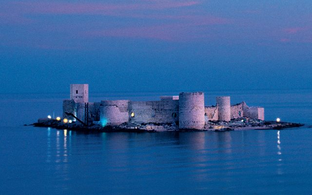
Korykos ve KızkalesiMersin · Römisch / Mittelalter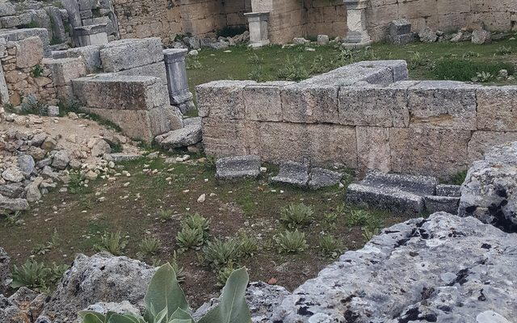
Antike Stadt KremnaBurdur · RömischAntike Stadt KyaneaiAntalya · Lykisch / RömischAntike Stadt Kymeİzmir · Archaik / RömischAntike Stadt KyzikosBalıkesir · Hellenistisch / Römisch Köprüpazar (Aspendos)-BrückeAntalya · Römisch / SeldschukischAusgrabungsstätte LaginaMuğla · Hellenistisch / RömischAntike Stadt Lambousa (Lapithos)Girne · Römisch / ByzantinischAntike Stadt LamosAntalya · Römisch / ByzantinischAusgrabungsstätte LaodikeiaDenizli · Hellenistisch / Römisch
Köprüpazar (Aspendos)-BrückeAntalya · Römisch / SeldschukischAusgrabungsstätte LaginaMuğla · Hellenistisch / RömischAntike Stadt Lambousa (Lapithos)Girne · Römisch / ByzantinischAntike Stadt LamosAntalya · Römisch / ByzantinischAusgrabungsstätte LaodikeiaDenizli · Hellenistisch / Römisch Antike Stadt Lebedosİzmir · İyon / RömischLikya Uygarlıkları Müzesi ve Andrıake ÖrenyeriAntalya · Lykisch / RömischAusgrabungsstätte LimyraAntalya · Lykisch / RömischAntike Stadt MagarsusAdana · Hellenistisch / RömischAusgrabungsstätte MagnesiaAydın · Hellenistisch / RömischManisa Akhisar Müzesi ve Akhisar Tepe MezarlığıManisa · Hellenistisch / RömischAusgrabungsstätte Metropolisİzmir · Hellenistisch / Römisch
Antike Stadt Lebedosİzmir · İyon / RömischLikya Uygarlıkları Müzesi ve Andrıake ÖrenyeriAntalya · Lykisch / RömischAusgrabungsstätte LimyraAntalya · Lykisch / RömischAntike Stadt MagarsusAdana · Hellenistisch / RömischAusgrabungsstätte MagnesiaAydın · Hellenistisch / RömischManisa Akhisar Müzesi ve Akhisar Tepe MezarlığıManisa · Hellenistisch / RömischAusgrabungsstätte Metropolisİzmir · Hellenistisch / Römisch Mezgitkale Mezar AnıtıMersin · RömischAusgrabungsstätte Milas EuromosMuğla · Hellenistisch / RömischAusgrabungsstätte MiletAydın · Archaik / Römisch
Mezgitkale Mezar AnıtıMersin · RömischAusgrabungsstätte Milas EuromosMuğla · Hellenistisch / RömischAusgrabungsstätte MiletAydın · Archaik / Römisch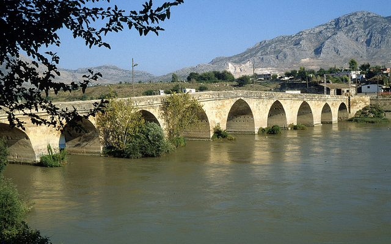
Antike Stadt Misis (Mopsuestia)Adana · Römisch / ByzantinischAusgrabungsstätte MyraAntalya · Lykisch / RömischAusgrabungsstätte Niğde AndavalNiğde · Römisch / ByzantinischAntike Stadt Notionİzmir · Hellenistisch / RömischAusgrabungsstätte Nysa SultanhisarAydın · Hellenistisch / RömischAntike Stadt OinoandaMuğla · Lykisch / RömischAntike Stadt OlbaMersin · Hellenistisch / RömischAusgrabungsstätte OlymposAntalya · Lykisch / RömischAntike Stadt ParionÇanakkale · Hellenistisch / RömischAusgrabungsstätte PataraAntalya · Lykisch / RömischAntike Stadt PednelissosAntalya · Hellenistisch / RömischAusgrabungsstätte PergeAntalya · Hellenistisch / RömischAntike Stadt PerpereneBalıkesir · Hellenistisch / RömischAusgrabungsstätte PerreAdıyaman · Kommagene / RömischAusgrabungsstätte PessinusEskişehir · Phrygisch / Hellenistisch / RömischAusgrabungsstätte PhaselisAntalya · Lykisch / RömischAntike Stadt Phokaia (Foça)İzmir · Archaik / RömischAntike Stadt Pisidia AntiokheiaIsparta · Hellenistisch / RömischAntike Stadt PompeiopolisKastamonu · Römisch Antike Stadt Prusias ad Hypium (Konuralp)Düzce · RömischAntike Stadt RhodiapolisAntalya · Lykisch / Römisch
Antike Stadt Prusias ad Hypium (Konuralp)Düzce · RömischAntike Stadt RhodiapolisAntalya · Lykisch / Römisch Römische Thermen von AnkaraAnkara · RömischAusgrabungsstätte SagalassosBurdur · Hellenistisch / RömischAusgrabungsstätte SalamisGazimağusa · Bronzezeit / Römisch / ByzantinischAusgrabungsstätte SardesManisa · Lydisch / Römisch
Römische Thermen von AnkaraAnkara · RömischAusgrabungsstätte SagalassosBurdur · Hellenistisch / RömischAusgrabungsstätte SalamisGazimağusa · Bronzezeit / Römisch / ByzantinischAusgrabungsstätte SardesManisa · Lydisch / Römisch Sarıkaya Roma-BadYozgat · Römisch
Sarıkaya Roma-BadYozgat · Römisch Antike Stadt SatalaGümüşhane · RömischAntike Stadt SebastopolisTokat · RömischAusgrabungsstätte Sedir AdasıMuğla · Hellenistisch / RömischAntike Stadt Seleukeia (Pamfilya)Antalya · Hellenistisch / RömischAntike Stadt SelgeAntalya · Hellenistisch / Römisch
Antike Stadt SatalaGümüşhane · RömischAntike Stadt SebastopolisTokat · RömischAusgrabungsstätte Sedir AdasıMuğla · Hellenistisch / RömischAntike Stadt Seleukeia (Pamfilya)Antalya · Hellenistisch / RömischAntike Stadt SelgeAntalya · Hellenistisch / Römisch Antike Stadt SelinusAntalya · RömischAusgrabungsstätte SideAntalya · Hellenistisch / RömischAntike Stadt SidymaMuğla · Lykisch / RömischAntike Stadt SillyonAntalya · Hellenistisch / Römisch
Antike Stadt SelinusAntalya · RömischAusgrabungsstätte SideAntalya · Hellenistisch / RömischAntike Stadt SidymaMuğla · Lykisch / RömischAntike Stadt SillyonAntalya · Hellenistisch / Römisch Sobesos Antik Kenti (Şahinefendi)Nevşehir · Römisch / ByzantinischAusgrabungsstätte SobessosNevşehir · Römisch / ByzantinischSofraz Anıt MezarıAdıyaman · Hellenistisch / RömischAntike Stadt Soli PompeiopolisMersin · Hellenistisch / RömischAusgrabungsstätte SoliLefke · Archaik / RömischAntike Stadt SoğmatarŞanlıurfa · Römisch / SabiiAusgrabungsstätte StratonikeiaMuğla · Hellenistisch – Osmanisch
Sobesos Antik Kenti (Şahinefendi)Nevşehir · Römisch / ByzantinischAusgrabungsstätte SobessosNevşehir · Römisch / ByzantinischSofraz Anıt MezarıAdıyaman · Hellenistisch / RömischAntike Stadt Soli PompeiopolisMersin · Hellenistisch / RömischAusgrabungsstätte SoliLefke · Archaik / RömischAntike Stadt SoğmatarŞanlıurfa · Römisch / SabiiAusgrabungsstätte StratonikeiaMuğla · Hellenistisch – Osmanisch Sultanahmet Meydanı (Hipodrom)İstanbul · Römisch / Byzantinisch
Sultanahmet Meydanı (Hipodrom)İstanbul · Römisch / Byzantinisch Antike Stadt TapureliMersin · Römisch / Byzantinisch
Antike Stadt TapureliMersin · Römisch / Byzantinisch Tarsus Antik Roma-WegMersin · RömischTarsus GözlükuleMersin · Bronzezeit – Römisch
Tarsus Antik Roma-WegMersin · RömischTarsus GözlükuleMersin · Bronzezeit – Römisch Tarsus Kleopatra Kapısı ve Antik YolMersin · Römisch
Tarsus Kleopatra Kapısı ve Antik YolMersin · Römisch Tarsus St. Paul KuyusuMersin · Römisch / Frühchristlich
Tarsus St. Paul KuyusuMersin · Römisch / Frühchristlich TaşköprüAdana · RömischAusgrabungsstätte TermessosAntalya · Hellenistisch / RömischBurg TilbaşarGaziantep · Römisch / Mittelalter
TaşköprüAdana · RömischAusgrabungsstätte TermessosAntalya · Hellenistisch / RömischBurg TilbaşarGaziantep · Römisch / Mittelalter Titus Tüneli (Vespasianus Tüneli)Hatay · RömischAntike Stadt TralleisAydın · Hellenistisch / Römisch
Titus Tüneli (Vespasianus Tüneli)Hatay · RömischAntike Stadt TralleisAydın · Hellenistisch / Römisch Antike Stadt TrebennaAntalya · Römisch / Byzantinisch
Antike Stadt TrebennaAntalya · Römisch / Byzantinisch Tyana Antik Kenti ve Roma Havuzu (Kemerhisar)Niğde · RömischAusgrabungsstätte UzuncaburçMersin · Hellenistisch / RömischBurg VanVan · Urartäisch – Osmanisch
Tyana Antik Kenti ve Roma Havuzu (Kemerhisar)Niğde · RömischAusgrabungsstätte UzuncaburçMersin · Hellenistisch / RömischBurg VanVan · Urartäisch – Osmanisch Ausgrabungsstätte YanıkhanMersin · Römisch / ByzantinischSiedlungshügel YumuktepeMersin · Neolithikum – Mittelalter
Ausgrabungsstätte YanıkhanMersin · Römisch / ByzantinischSiedlungshügel YumuktepeMersin · Neolithikum – Mittelalter Zengibar Kalesi (Isaura)Konya · Römisch
Zengibar Kalesi (Isaura)Konya · Römisch Burg ZerzevanDiyarbakır · RömischAusgrabungsstätte ZeugmaGaziantep · Hellenistisch / RömischAntike Siedlung ÇatıörenMersin · Hellenistisch / Römisch
Burg ZerzevanDiyarbakır · RömischAusgrabungsstätte ZeugmaGaziantep · Hellenistisch / RömischAntike Siedlung ÇatıörenMersin · Hellenistisch / Römisch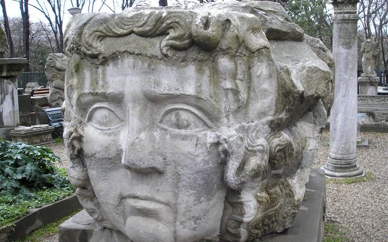
Çemberlitaş Sütunu (Konstantin Forumu)İstanbul · Römisch / ByzantinischAusgrabungsstätte ÇevlikHatay · Hellenistisch / Römisch Üçayaklı Villa RustikaMersin · Römisch / ByzantinischAntike Stadt İdyrosAntalya · Römisch / ByzantinischBurg ŞanlıurfaŞanlıurfa · Hellenistisch – MittelalterAntike Stadt Şar (Komana)Adana · Hethitisch / RömischŞuayb ŞehriŞanlıurfa · Römisch / İslamiArchäologisches Museum Bodrum SualtıMuğla · Bronzezeit – OsmanischMuseum FethiyeMuğla · Lykisch / Römisch
Üçayaklı Villa RustikaMersin · Römisch / ByzantinischAntike Stadt İdyrosAntalya · Römisch / ByzantinischBurg ŞanlıurfaŞanlıurfa · Hellenistisch – MittelalterAntike Stadt Şar (Komana)Adana · Hethitisch / RömischŞuayb ŞehriŞanlıurfa · Römisch / İslamiArchäologisches Museum Bodrum SualtıMuğla · Bronzezeit – OsmanischMuseum FethiyeMuğla · Lykisch / Römisch Mosaikmuseum HaleplibahçeŞanlıurfa · Römisch / Byzantinisch
Mosaikmuseum HaleplibahçeŞanlıurfa · Römisch / Byzantinisch Archäologisches Museum HatayHatay · Römisch / Mehrere Epochen
Archäologisches Museum HatayHatay · Römisch / Mehrere Epochen Archäologisches Museum Hierapolis (Pamukkale)Denizli · RömischArchäologisches Museum KocaeliKocaeli · Römisch / Mehrere Epochen
Archäologisches Museum Hierapolis (Pamukkale)Denizli · RömischArchäologisches Museum KocaeliKocaeli · Römisch / Mehrere Epochen Museum KonuralpDüzce · Römisch
Museum KonuralpDüzce · Römisch Mosaikmuseum MisisAdana · Römisch
Mosaikmuseum MisisAdana · Römisch Museum SideAntalya · Römisch
Museum SideAntalya · Römisch Mosaikmuseum Silifke NarlıkuyuMersin · Römisch
Mosaikmuseum Silifke NarlıkuyuMersin · Römisch Museum YalvaçIsparta · Römisch / Mehrere Epochen
Museum YalvaçIsparta · Römisch / Mehrere Epochen Mosaikmuseum ZeugmaGaziantep · RömischArchäologisches Museum ŞanlıurfaŞanlıurfa · Neolithikum – Osmanisch
Mosaikmuseum ZeugmaGaziantep · RömischArchäologisches Museum ŞanlıurfaŞanlıurfa · Neolithikum – OsmanischByzanz & Mittelalter
330 – 1453 · 160 Orte
 Ausgrabungsstätte AniKars · MittelalterBergama Kızılavluİzmir · Römisch / Byzantinisch
Ausgrabungsstätte AniKars · MittelalterBergama Kızılavluİzmir · Römisch / Byzantinisch Unterirdische Stadt DerinkuyuNevşehir · Byzantinisch
Unterirdische Stadt DerinkuyuNevşehir · Byzantinisch El Nazar-KircheNevşehir · Byzantinisch (10. Jh.)
El Nazar-KircheNevşehir · Byzantinisch (10. Jh.) Ausgrabungsstätte GöremeNevşehir · Byzantinisch (9–12. Jh.)
Ausgrabungsstätte GöremeNevşehir · Byzantinisch (9–12. Jh.) Karanlık Kilise (Göreme)Nevşehir · Byzantinisch (11. Jh.)
Karanlık Kilise (Göreme)Nevşehir · Byzantinisch (11. Jh.) Unterirdische Stadt KaymaklıNevşehir · Byzantinisch
Unterirdische Stadt KaymaklıNevşehir · Byzantinisch Zelve und PaşabağNevşehir · Byzantinisch / Osmanisch
Zelve und PaşabağNevşehir · Byzantinisch / Osmanisch Çavuşin Örenyeri (Çavuşin Kilisesi)Nevşehir · ByzantinischBurg AfyonkarahisarAfyonkarahisar · Hethitisch – OsmanischAusgrabungsstätte AkkaleMersin · Römisch / ByzantinischAusgrabungsstätte Aksaray Manastır VadisiAksaray · Byzantinisch
Çavuşin Örenyeri (Çavuşin Kilisesi)Nevşehir · ByzantinischBurg AfyonkarahisarAfyonkarahisar · Hethitisch – OsmanischAusgrabungsstätte AkkaleMersin · Römisch / ByzantinischAusgrabungsstätte Aksaray Manastır VadisiAksaray · Byzantinisch Burg Akçakoca (Ceneviz)Düzce · Genuesisch
Burg Akçakoca (Ceneviz)Düzce · Genuesisch Kloster AlahanMersin · ByzantinischAusgrabungsstätte AlaşehirManisa · Hellenistisch / Byzantinisch
Kloster AlahanMersin · ByzantinischAusgrabungsstätte AlaşehirManisa · Hellenistisch / Byzantinisch Burg AmasraBartın · Byzantinisch / GenuesischAntike Stadt AmoriumAfyonkarahisar · Römisch / ByzantinischAusgrabungsstätte AnavarzaAdana · Römisch / ByzantinischAusgrabungsstätte AnemuriumMersin · Römisch / ByzantinischBurg AnkaraAnkara · Römisch – Osmanisch
Burg AmasraBartın · Byzantinisch / GenuesischAntike Stadt AmoriumAfyonkarahisar · Römisch / ByzantinischAusgrabungsstätte AnavarzaAdana · Römisch / ByzantinischAusgrabungsstätte AnemuriumMersin · Römisch / ByzantinischBurg AnkaraAnkara · Römisch – Osmanisch Antiphonitis-KircheGirne · Byzantinisch (12. Jh.)
Antiphonitis-KircheGirne · Byzantinisch (12. Jh.) Kloster Apostolos Andreasİskele · Byzantinisch / Osmanisch
Kloster Apostolos Andreasİskele · Byzantinisch / Osmanisch Denkmalmuseum Aya İriniİstanbul · Byzantinisch (6. Jh.)
Denkmalmuseum Aya İriniİstanbul · Byzantinisch (6. Jh.) Burg Ayas (Yumurtalık)Adana · Mittelalter
Burg Ayas (Yumurtalık)Adana · Mittelalter Ayasofya-i Kebir Cami-i Şerifiİstanbul · Byzantinisch / Osmanisch
Ayasofya-i Kebir Cami-i Şerifiİstanbul · Byzantinisch / Osmanisch Ausgrabungsstätte Ayasuluk - St.Jeanİzmir · Byzantinisch
Ausgrabungsstätte Ayasuluk - St.Jeanİzmir · Byzantinisch Burg Ayasulukİzmir · Byzantinisch / Anatolische FürstentümerAyia Trias Bazilikasıİskele · FrühchristlichUnterirdische Stadt Aziz MercuriusAksaray · Byzantinisch
Burg Ayasulukİzmir · Byzantinisch / Anatolische FürstentümerAyia Trias Bazilikasıİskele · FrühchristlichUnterirdische Stadt Aziz MercuriusAksaray · Byzantinisch Burg BakrasHatay · Mittelalter
Burg BakrasHatay · Mittelalter Balıklıgöl ve Halil-ür Rahman CamiiŞanlıurfa · Mittelalter / Osmanisch
Balıklıgöl ve Halil-ür Rahman CamiiŞanlıurfa · Mittelalter / Osmanisch Kloster BellapaisGirne · Lusignan
Kloster BellapaisGirne · Lusignan Binbir KiliseKaraman · Byzantinisch
Binbir KiliseKaraman · Byzantinisch Binbirdirek-Zisterneİstanbul · Byzantinisch
Binbirdirek-Zisterneİstanbul · Byzantinisch Burg BitlisBitlis · Mittelalter / Osmanisch
Burg BitlisBitlis · Mittelalter / Osmanisch Bolaman Kalesi ve Hazinedaroğlu KonağıOrdu · Mittelalter / Osmanisch
Bolaman Kalesi ve Hazinedaroğlu KonağıOrdu · Mittelalter / Osmanisch Burg BuffaventoGirne · Byzantinisch / LusignanBursa İznik Göl BazilikasıBursa · Byzantinisch
Burg BuffaventoGirne · Byzantinisch / LusignanBursa İznik Göl BazilikasıBursa · Byzantinisch Ausgrabungsstätte DaraMardin · ByzantinischSiedlungshügel DerbeKaraman · Römisch / Byzantinisch
Ausgrabungsstätte DaraMardin · ByzantinischSiedlungshügel DerbeKaraman · Römisch / Byzantinisch Kloster DeyrulzafaranMardin · Frühchristlich / ByzantinischDiyarbakır SurlarıDiyarbakır · Römisch – OsmanischEdirne Makedonya-TurmEdirne · Römisch / Byzantinisch / OsmanischEfes Örenyeri-Yamaçevlerİzmir · Römisch / ByzantinischEnez Kalesi (Ainos)Edirne · Antike / Byzantinisch / Osmanisch
Kloster DeyrulzafaranMardin · Frühchristlich / ByzantinischDiyarbakır SurlarıDiyarbakır · Römisch – OsmanischEdirne Makedonya-TurmEdirne · Römisch / Byzantinisch / OsmanischEfes Örenyeri-Yamaçevlerİzmir · Römisch / ByzantinischEnez Kalesi (Ainos)Edirne · Antike / Byzantinisch / Osmanisch Burg ErzurumErzurum · Byzantinisch / Seldschukisch / OsmanischAntike Stadt EtennaAntalya · Römisch / ByzantinischEğil Kalesi ve Peygamber TürbeleriDiyarbakır · Asur – Osmanisch
Burg ErzurumErzurum · Byzantinisch / Seldschukisch / OsmanischAntike Stadt EtennaAntalya · Römisch / ByzantinischEğil Kalesi ve Peygamber TürbeleriDiyarbakır · Asur – Osmanisch Fethiye Gemile AdasıMuğla · ByzantinischAusgrabungsstätte Fethiye TlosMuğla · Bronzezeit – OsmanischFildamı-Zisterneİstanbul · ByzantinischAusgrabungsstätte Filyos(Tios)Zonguldak · Hellenistisch – ByzantinischAntike Stadt GagaeAntalya · Lykisch / Byzantinisch
Fethiye Gemile AdasıMuğla · ByzantinischAusgrabungsstätte Fethiye TlosMuğla · Bronzezeit – OsmanischFildamı-Zisterneİstanbul · ByzantinischAusgrabungsstätte Filyos(Tios)Zonguldak · Hellenistisch – ByzantinischAntike Stadt GagaeAntalya · Lykisch / Byzantinisch Burg GaziantepGaziantep · Byzantinisch / Mamlukisch / Osmanisch
Burg GaziantepGaziantep · Byzantinisch / Mamlukisch / Osmanisch Burg GiresunGiresun · Pontus / Byzantinisch
Burg GiresunGiresun · Pontus / Byzantinisch Girne Kalesi ve Batık Gemi MüzesiGirne · Byzantinisch / VenezianischAusgrabungsstätte GökkaleMersin · Römisch / Byzantinisch
Girne Kalesi ve Batık Gemi MüzesiGirne · Byzantinisch / VenezianischAusgrabungsstätte GökkaleMersin · Römisch / Byzantinisch Burg GözneMersin · Mittelalter
Burg GözneMersin · Mittelalter Gülşehir-St.Jean-KircheNevşehir · Byzantinisch (13. Jh.)
Gülşehir-St.Jean-KircheNevşehir · Byzantinisch (13. Jh.) Gümüşler Manastırı ve Yeraltı ŞehriNiğde · Byzantinisch
Gümüşler Manastırı ve Yeraltı ŞehriNiğde · Byzantinisch Güzelyurt Manastır-TalAksaray · Byzantinisch
Güzelyurt Manastır-TalAksaray · Byzantinisch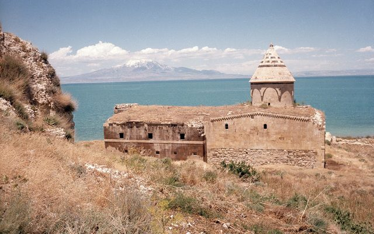
Kloster GıdutsVan · MittelalterAusgrabungsstätte HadrianopolisKarabük · Römisch / ByzantinischBurg HarputElâzığ · Urartäisch / MittelalterAusgrabungsstätte HarranŞanlıurfa · Bronzezeit – MittelalterAntike Stadt Herakleia (Latmos)Muğla · Hellenistisch / ByzantinischAusgrabungsstätte IassosMuğla · Bronzezeit – Byzantinisch Ausgrabungsstätte Ihlara VadisiAksaray · ByzantinischJuliopolis NekropolüAnkara · Römisch / Byzantinisch
Ausgrabungsstätte Ihlara VadisiAksaray · ByzantinischJuliopolis NekropolüAnkara · Römisch / Byzantinisch Justinianus (Beşköprü)-BrückeSakarya · ByzantinischAusgrabungsstätte KadıkalesiAydın · Byzantinisch / MittelalterAusgrabungsstätte Kahta YenikaleAdıyaman · Kommagene / MittelalterAusgrabungsstätte Kanlı DivaneMersin · Hellenistisch / Römisch / ByzantinischKanlıdivane (Kanytelis)Mersin · Hellenistisch / Byzantinisch
Justinianus (Beşköprü)-BrückeSakarya · ByzantinischAusgrabungsstätte KadıkalesiAydın · Byzantinisch / MittelalterAusgrabungsstätte Kahta YenikaleAdıyaman · Kommagene / MittelalterAusgrabungsstätte Kanlı DivaneMersin · Hellenistisch / Römisch / ByzantinischKanlıdivane (Kanytelis)Mersin · Hellenistisch / Byzantinisch Burg Kantaraİskele · Byzantinisch / LusignanAntike Siedlung KarakabaklıMersin · Römisch / Byzantinisch
Burg Kantaraİskele · Byzantinisch / LusignanAntike Siedlung KarakabaklıMersin · Römisch / Byzantinisch Chora-Kirche (Kariye-Moschee)İstanbul · Byzantinisch / OsmanischAusgrabungsstätte KastabalaOsmaniye · Hellenistisch / Römisch / Mittelalter
Chora-Kirche (Kariye-Moschee)İstanbul · Byzantinisch / OsmanischAusgrabungsstätte KastabalaOsmaniye · Hellenistisch / Römisch / Mittelalter Medrese KasımiyeMardin · Artuklu / Akkoyunlu
Medrese KasımiyeMardin · Artuklu / Akkoyunlu Unterirdische Stadt Keskin Sulu MağaraKırıkkale · Byzantinisch / MittelalterAntike Stadt KilistraKonya · Römisch / ByzantinischKorykos ve KızkalesiMersin · Römisch / Mittelalter
Unterirdische Stadt Keskin Sulu MağaraKırıkkale · Byzantinisch / MittelalterAntike Stadt KilistraKonya · Römisch / ByzantinischKorykos ve KızkalesiMersin · Römisch / Mittelalter Burg KütahyaKütahya · Byzantinisch / GermiyanKüçük Ayvasıl St. Anna-KircheTrabzon · Byzantinisch (9. Jh.)
Burg KütahyaKütahya · Byzantinisch / GermiyanKüçük Ayvasıl St. Anna-KircheTrabzon · Byzantinisch (9. Jh.) Kız-Turmİstanbul · Byzantinisch / Osmanisch
Kız-Turmİstanbul · Byzantinisch / Osmanisch Lala Mustafa Paşa-MoscheeGazimağusa · Lusignan / OsmanischAntike Stadt Lambousa (Lapithos)Girne · Römisch / ByzantinischAntike Stadt LamosAntalya · Römisch / Byzantinisch
Lala Mustafa Paşa-MoscheeGazimağusa · Lusignan / OsmanischAntike Stadt Lambousa (Lapithos)Girne · Römisch / ByzantinischAntike Stadt LamosAntalya · Römisch / Byzantinisch Malabadi-BrückeDiyarbakır · Artuklu
Malabadi-BrückeDiyarbakır · Artuklu Burg MamureMersin · Mittelalter / OsmanischUnterirdische Stadt MazıNevşehir · Byzantinisch
Burg MamureMersin · Mittelalter / OsmanischUnterirdische Stadt MazıNevşehir · Byzantinisch Mädchenburg (Kızkalesi)Mersin · Byzantinisch / Mittelalter
Mädchenburg (Kızkalesi)Mersin · Byzantinisch / Mittelalter Meryem Ana-Hausİzmir · Byzantinisch
Meryem Ana-Hausİzmir · Byzantinisch Kloster Meryem AnaGiresun · ByzantinischAntike Stadt Misis (Mopsuestia)Adana · Römisch / Byzantinisch
Kloster Meryem AnaGiresun · ByzantinischAntike Stadt Misis (Mopsuestia)Adana · Römisch / Byzantinisch Kloster Mor GabrielMardin · FrühchristlichUnterirdische Stadt MucurKırşehir · Byzantinisch / Mittelalter
Kloster Mor GabrielMardin · FrühchristlichUnterirdische Stadt MucurKırşehir · Byzantinisch / Mittelalter Burg NamrunMersin · Byzantinisch / ErmeniAusgrabungsstätte Niğde AndavalNiğde · Römisch / Byzantinisch
Burg NamrunMersin · Byzantinisch / ErmeniAusgrabungsstätte Niğde AndavalNiğde · Römisch / Byzantinisch Nymphaion (Nif) Laskaris-Palastİzmir · Byzantinisch
Nymphaion (Nif) Laskaris-Palastİzmir · Byzantinisch Burg OthelloGazimağusa · Lusignan / Venezianisch
Burg OthelloGazimağusa · Lusignan / Venezianisch Ausgrabungsstätte RumkaleGaziantep · MittelalterAusgrabungsstätte SalamisGazimağusa · Bronzezeit / Römisch / Byzantinisch
Ausgrabungsstätte RumkaleGaziantep · MittelalterAusgrabungsstätte SalamisGazimağusa · Bronzezeit / Römisch / Byzantinisch Unterirdische Stadt Saratlı KırkgözAksaray · Byzantinisch
Unterirdische Stadt Saratlı KırkgözAksaray · Byzantinisch Selimiye-MoscheeLefkoşa · Lusignan / Osmanisch
Selimiye-MoscheeLefkoşa · Lusignan / Osmanisch Ausgrabungsstätte Silifke AyateklaMersin · Frühchristlich / Byzantinisch
Ausgrabungsstätte Silifke AyateklaMersin · Frühchristlich / Byzantinisch Himmels- und HöllenschluchtMersin · Naturstätte / Byzantinisch
Himmels- und HöllenschluchtMersin · Naturstätte / Byzantinisch Burg SilifkeMersin · Byzantinisch / Mittelalter
Burg SilifkeMersin · Byzantinisch / Mittelalter Sille ve Aya Elenia KilisesiKonya · Byzantinisch / OsmanischAusgrabungsstätte SimenaAntalya · Lykisch / ByzantinischSobesos Antik Kenti (Şahinefendi)Nevşehir · Römisch / ByzantinischAusgrabungsstätte SobessosNevşehir · Römisch / Byzantinisch
Sille ve Aya Elenia KilisesiKonya · Byzantinisch / OsmanischAusgrabungsstätte SimenaAntalya · Lykisch / ByzantinischSobesos Antik Kenti (Şahinefendi)Nevşehir · Römisch / ByzantinischAusgrabungsstätte SobessosNevşehir · Römisch / Byzantinisch Burg SoftaMersin · Byzantinisch / Ermeni
Burg SoftaMersin · Byzantinisch / Ermeni Kloster St. BarnabasGazimağusa · Frühchristlich / Osmanisch
Kloster St. BarnabasGazimağusa · Frühchristlich / Osmanisch Burg St. HilarionGirne · Byzantinisch / Lusignan
Burg St. HilarionGirne · Byzantinisch / Lusignan Kloster St. SimonHatay · ByzantinischAusgrabungsstätte StratonikeiaMuğla · Hellenistisch – OsmanischSultanahmet Meydanı (Hipodrom)İstanbul · Römisch / Byzantinisch
Kloster St. SimonHatay · ByzantinischAusgrabungsstätte StratonikeiaMuğla · Hellenistisch – OsmanischSultanahmet Meydanı (Hipodrom)İstanbul · Römisch / Byzantinisch Kloster SümelaTrabzon · Byzantinisch – 20. Jh.Antike Stadt TapureliMersin · Römisch / ByzantinischTarsus St. Paul KuyusuMersin · Römisch / Frühchristlich
Kloster SümelaTrabzon · Byzantinisch – 20. Jh.Antike Stadt TapureliMersin · Römisch / ByzantinischTarsus St. Paul KuyusuMersin · Römisch / Frühchristlich Unterirdische Stadt TatlarinNevşehir · Byzantinisch
Unterirdische Stadt TatlarinNevşehir · Byzantinisch Theodosius Forumu Kalıntılarıİstanbul · Byzantinisch
Theodosius Forumu Kalıntılarıİstanbul · Byzantinisch Theodosius Surlarıİstanbul · ByzantinischBurg TilbaşarGaziantep · Römisch / Mittelalter
Theodosius Surlarıİstanbul · ByzantinischBurg TilbaşarGaziantep · Römisch / Mittelalter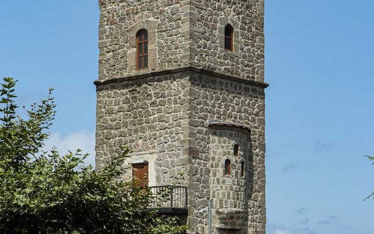
Trabzon Ayasofya-MoscheeTrabzon · ByzantinischAntike Stadt TrebennaAntalya · Römisch / ByzantinischBurg VanVan · Urartäisch – OsmanischVize Ayasofya (Gazi Süleyman Paşa)-MoscheeKırklareli · ByzantinischAusgrabungsstätte YanıkhanMersin · Römisch / Byzantinisch Festung Yedikuleİstanbul · Byzantinisch / Osmanisch
Festung Yedikuleİstanbul · Byzantinisch / Osmanisch Yerebatan-Zisterneİstanbul · Byzantinisch (6. Jh.)
Yerebatan-Zisterneİstanbul · Byzantinisch (6. Jh.) Ausgrabungsstätte Yeşilhisar SoğanlıKayseri · ByzantinischSiedlungshügel YumuktepeMersin · Neolithikum – MittelalterYılankaleAdana · Kilikya Ermeni Krallığı
Ausgrabungsstätte Yeşilhisar SoğanlıKayseri · ByzantinischSiedlungshügel YumuktepeMersin · Neolithikum – MittelalterYılankaleAdana · Kilikya Ermeni Krallığı ZilkaleRize · Mittelalter
ZilkaleRize · Mittelalter Medrese ZinciriyeDiyarbakır · ArtukluÇemberlitaş Sütunu (Konstantin Forumu)İstanbul · Römisch / Byzantinisch
Medrese ZinciriyeDiyarbakır · ArtukluÇemberlitaş Sütunu (Konstantin Forumu)İstanbul · Römisch / Byzantinisch Ausgrabungsstätte ÖküzlüMersin · Byzantinisch
Ausgrabungsstätte ÖküzlüMersin · Byzantinisch Unterirdische Stadt ÖzkonakNevşehir · ByzantinischÜçayaklı Villa RustikaMersin · Römisch / ByzantinischAntike Stadt İdyrosAntalya · Römisch / Byzantinisch
Unterirdische Stadt ÖzkonakNevşehir · ByzantinischÜçayaklı Villa RustikaMersin · Römisch / ByzantinischAntike Stadt İdyrosAntalya · Römisch / Byzantinisch İmrahor İlyas Bey Camii (Studios Manastırı)İstanbul · Byzantinisch
İmrahor İlyas Bey Camii (Studios Manastırı)İstanbul · Byzantinisch Galataturmİstanbul · Genuesisch / OsmanischBurg ŞanlıurfaŞanlıurfa · Hellenistisch – Mittelalter
Galataturmİstanbul · Genuesisch / OsmanischBurg ŞanlıurfaŞanlıurfa · Hellenistisch – Mittelalter Şerefiye-Zisterneİstanbul · ByzantinischDenkmalmuseum AkdamarVan · Mittelalter (10. Jh.)
Şerefiye-Zisterneİstanbul · ByzantinischDenkmalmuseum AkdamarVan · Mittelalter (10. Jh.) Hagia-Sophia-Geschichts- und Erlebnismuseumİstanbul · Byzantinisch / Osmanisch
Hagia-Sophia-Geschichts- und Erlebnismuseumİstanbul · Byzantinisch / Osmanisch Denkmalmuseum Aziz (St.) NikolaosAntalya · ByzantinischBodrum Serçe Limanı Cam Batığı Sergi SalonuMuğla · Mittelalter (11. Jh.)Archäologisches Museum Bodrum SualtıMuğla · Bronzezeit – Osmanisch
Denkmalmuseum Aziz (St.) NikolaosAntalya · ByzantinischBodrum Serçe Limanı Cam Batığı Sergi SalonuMuğla · Mittelalter (11. Jh.)Archäologisches Museum Bodrum SualtıMuğla · Bronzezeit – Osmanisch Museum Büyük Saray Mozaikleriİstanbul · Byzantinisch
Museum Büyük Saray Mozaikleriİstanbul · Byzantinisch Museum Fethiyeİstanbul · ByzantinischMosaikmuseum HaleplibahçeŞanlıurfa · Römisch / Byzantinisch
Museum Fethiyeİstanbul · ByzantinischMosaikmuseum HaleplibahçeŞanlıurfa · Römisch / Byzantinisch Museum LapidariLefkoşa · Lusignan / Venezianisch
Museum LapidariLefkoşa · Lusignan / Venezianisch Namık Kemal Zindanı ve MüzesiGazimağusa · Venezianisch / Osmanisch
Namık Kemal Zindanı ve MüzesiGazimağusa · Venezianisch / Osmanisch Denkmalmuseum St. PierreHatay · Frühchristlich
Denkmalmuseum St. PierreHatay · Frühchristlich Denkmalmuseum Tarsus St. PaulMersin · Osmanisch / Christlich
Denkmalmuseum Tarsus St. PaulMersin · Osmanisch / Christlich Museum İskele İkonİskele · Byzantinisch (12. Jh.)Archäologisches Museum ŞanlıurfaŞanlıurfa · Neolithikum – Osmanisch
Museum İskele İkonİskele · Byzantinisch (12. Jh.)Archäologisches Museum ŞanlıurfaŞanlıurfa · Neolithikum – OsmanischSeldschuken & Fürstentümer
1071 – 1400 · 48 Orte
 Afyon Mevlevihanesi (Sultan Divani)Afyonkarahisar · Seldschukisch / OsmanischBurg AfyonkarahisarAfyonkarahisar · Hethitisch – Osmanisch
Afyon Mevlevihanesi (Sultan Divani)Afyonkarahisar · Seldschukisch / OsmanischBurg AfyonkarahisarAfyonkarahisar · Hethitisch – Osmanisch Ahlat Selçuklu MezarlığıBitlis · Seldschukisch / Anatolische Fürstentümer
Ahlat Selçuklu MezarlığıBitlis · Seldschukisch / Anatolische Fürstentümer Alaeddin-MoscheeKonya · Seldschukisch
Alaeddin-MoscheeKonya · Seldschukisch Burg AlanyaAntalya · Seldschukisch
Burg AlanyaAntalya · Seldschukisch AlarahanAntalya · Seldschukisch
AlarahanAntalya · Seldschukisch Karawanserei AlayAksaray · SeldschukischBurg AnkaraAnkara · Römisch – Osmanisch
Karawanserei AlayAksaray · SeldschukischBurg AnkaraAnkara · Römisch – Osmanisch Külliye Ashab-ı KehfKahramanmaraş · Seldschukisch / OsmanischBurg Ayasulukİzmir · Byzantinisch / Anatolische Fürstentümer
Külliye Ashab-ı KehfKahramanmaraş · Seldschukisch / OsmanischBurg Ayasulukİzmir · Byzantinisch / Anatolische Fürstentümer Karawanserei AğzıkaraAksaray · Seldschukisch
Karawanserei AğzıkaraAksaray · Seldschukisch Medrese CacabeyKırşehir · Seldschukisch
Medrese CacabeyKırşehir · Seldschukisch Divriği Ulu Camii ve DarüşşifasıSivas · Seldschukisch (13. Jh.)Diyarbakır SurlarıDiyarbakır · Römisch – Osmanisch
Divriği Ulu Camii ve DarüşşifasıSivas · Seldschukisch (13. Jh.)Diyarbakır SurlarıDiyarbakır · Römisch – Osmanisch Diyarbakır Ulu-MoscheeDiyarbakır · SeldschukischBurg ErzurumErzurum · Byzantinisch / Seldschukisch / OsmanischEğil Kalesi ve Peygamber TürbeleriDiyarbakır · Asur – OsmanischAusgrabungsstätte Fethiye TlosMuğla · Bronzezeit – OsmanischBurg GaziantepGaziantep · Byzantinisch / Mamlukisch / Osmanisch
Diyarbakır Ulu-MoscheeDiyarbakır · SeldschukischBurg ErzurumErzurum · Byzantinisch / Seldschukisch / OsmanischEğil Kalesi ve Peygamber TürbeleriDiyarbakır · Asur – OsmanischAusgrabungsstätte Fethiye TlosMuğla · Bronzezeit – OsmanischBurg GaziantepGaziantep · Byzantinisch / Mamlukisch / Osmanisch Karawanserei Han el Ba'rurŞanlıurfa · Seldschukisch
Karawanserei Han el Ba'rurŞanlıurfa · Seldschukisch Burg KarsKars · Seldschukisch / OsmanischBurg KayseriKayseri · Römisch / Seldschukisch
Burg KarsKars · Seldschukisch / OsmanischBurg KayseriKayseri · Römisch / Seldschukisch Kubadabad-PalastKonya · SeldschukischKöprüpazar (Aspendos)-BrückeAntalya · Römisch / Seldschukisch
Kubadabad-PalastKonya · SeldschukischKöprüpazar (Aspendos)-BrückeAntalya · Römisch / Seldschukisch KızılkuleAntalya · Seldschukisch
KızılkuleAntalya · Seldschukisch Mahmut Bey-MoscheeKastamonu · Anatolische Fürstentümer
Mahmut Bey-MoscheeKastamonu · Anatolische Fürstentümer Milas Beçin Kalesi ve ÖrenyeriMuğla · Antike / Fürstentum MenteşeNakoleia ve Seyitgazi KülliyesiEskişehir · Seldschukisch / Osmanisch
Milas Beçin Kalesi ve ÖrenyeriMuğla · Antike / Fürstentum MenteşeNakoleia ve Seyitgazi KülliyesiEskişehir · Seldschukisch / Osmanisch Medrese SahabiyeKayseri · Seldschukisch
Medrese SahabiyeKayseri · Seldschukisch Karawanserei SarıhanNevşehir · SeldschukischAusgrabungsstätte StratonikeiaMuğla · Hellenistisch – Osmanisch
Karawanserei SarıhanNevşehir · SeldschukischAusgrabungsstätte StratonikeiaMuğla · Hellenistisch – Osmanisch Karawanserei SultanhanıAksaray · SeldschukischKloster SümelaTrabzon · Byzantinisch – 20. Jh.Burg VanVan · Urartäisch – Osmanisch
Karawanserei SultanhanıAksaray · SeldschukischKloster SümelaTrabzon · Byzantinisch – 20. Jh.Burg VanVan · Urartäisch – Osmanisch Yivli Minare-MoscheeAntalya · Seldschukisch
Yivli Minare-MoscheeAntalya · Seldschukisch Karawanserei ZazadinKonya · Seldschukisch
Karawanserei ZazadinKonya · Seldschukisch Üç KümbetlerErzurum · Saltuklu
Üç KümbetlerErzurum · Saltuklu Karawanserei ŞarapsaAntalya · SeldschukischArchäologisches Museum Bodrum SualtıMuğla · Bronzezeit – Osmanisch
Karawanserei ŞarapsaAntalya · SeldschukischArchäologisches Museum Bodrum SualtıMuğla · Bronzezeit – Osmanisch Museum EtnografyaAnkara · Seldschukisch / Osmanisch / Republikzeit
Museum EtnografyaAnkara · Seldschukisch / Osmanisch / Republikzeit Museum HacıbektaşNevşehir · Seldschukisch / Osmanisch
Museum HacıbektaşNevşehir · Seldschukisch / Osmanisch Museum Karatay (Çini Eserler)Konya · Seldschukisch
Museum Karatay (Çini Eserler)Konya · Seldschukisch Museum Konya PanoramaKonya · SeldschukischMuseum MalazgirtMuş · Seldschukisch (1071)
Museum Konya PanoramaKonya · SeldschukischMuseum MalazgirtMuş · Seldschukisch (1071) Museum MevlanaKonya · Seldschukisch / OsmanischMuseum MevlevihaneAntalya · Seldschukisch / Osmanisch
Museum MevlanaKonya · Seldschukisch / OsmanischMuseum MevlevihaneAntalya · Seldschukisch / Osmanisch Türk ve İslam Eserleri Müzesiİstanbul · Seldschukisch / OsmanischArchäologisches Museum ŞanlıurfaŞanlıurfa · Neolithikum – Osmanisch
Türk ve İslam Eserleri Müzesiİstanbul · Seldschukisch / OsmanischArchäologisches Museum ŞanlıurfaŞanlıurfa · Neolithikum – OsmanischOsmanische Zeit
1299 – 1922 · 171 Orte
Zelve und PaşabağNevşehir · Byzantinisch / OsmanischAfyon Mevlevihanesi (Sultan Divani)Afyonkarahisar · Seldschukisch / OsmanischBurg AfyonkarahisarAfyonkarahisar · Hethitisch – Osmanisch Ahrida Sinagoguİstanbul · Osmanisch (15. Jh.)Grabmal AkşemsettinBolu · Osmanisch
Ahrida Sinagoguİstanbul · Osmanisch (15. Jh.)Grabmal AkşemsettinBolu · Osmanisch Festung Anadoluhisarıİstanbul · OsmanischBurg AnkaraAnkara · Römisch – OsmanischKloster Apostolos Andreasİskele · Byzantinisch / OsmanischKülliye Ashab-ı KehfKahramanmaraş · Seldschukisch / OsmanischAyasofya-i Kebir Cami-i Şerifiİstanbul · Byzantinisch / Osmanisch
Festung Anadoluhisarıİstanbul · OsmanischBurg AnkaraAnkara · Römisch – OsmanischKloster Apostolos Andreasİskele · Byzantinisch / OsmanischKülliye Ashab-ı KehfKahramanmaraş · Seldschukisch / OsmanischAyasofya-i Kebir Cami-i Şerifiİstanbul · Byzantinisch / Osmanisch Aynalıkavak Kasrıİstanbul · Osmanisch (18. Jh.)Balıklıgöl ve Halil-ür Rahman CamiiŞanlıurfa · Mittelalter / Osmanisch
Aynalıkavak Kasrıİstanbul · Osmanisch (18. Jh.)Balıklıgöl ve Halil-ür Rahman CamiiŞanlıurfa · Mittelalter / Osmanisch Beylerbeyi-Palastİstanbul · Osmanisch (19. Jh.)Burg BitlisBitlis · Mittelalter / OsmanischBolaman Kalesi ve Hazinedaroğlu KonağıOrdu · Mittelalter / Osmanisch
Beylerbeyi-Palastİstanbul · Osmanisch (19. Jh.)Burg BitlisBitlis · Mittelalter / OsmanischBolaman Kalesi ve Hazinedaroğlu KonağıOrdu · Mittelalter / Osmanisch Bulgar Sveti Stefan (Demir)-Kircheİstanbul · Osmanisch (19. Jh.)
Bulgar Sveti Stefan (Demir)-Kircheİstanbul · Osmanisch (19. Jh.) Bursa Ulu-MoscheeBursa · Osmanisch (14. Jh.)
Bursa Ulu-MoscheeBursa · Osmanisch (14. Jh.) Bursa Yeşil Cami ve Yeşil TürbeBursa · Osmanisch (15. Jh.)
Bursa Yeşil Cami ve Yeşil TürbeBursa · Osmanisch (15. Jh.) Medrese Büyük AğaAmasya · Osmanisch
Medrese Büyük AğaAmasya · Osmanisch Karawanserei BüyükLefkoşa · Osmanisch (16. Jh.)
Karawanserei BüyükLefkoşa · Osmanisch (16. Jh.) Karawanserei CinciKarabük · Osmanisch
Karawanserei CinciKarabük · Osmanisch Cumalıkızık KöyüBursa · OsmanischDemirköy DökümhanesiKırklareli · OsmanischDiyarbakır SurlarıDiyarbakır · Römisch – Osmanisch
Cumalıkızık KöyüBursa · OsmanischDemirköy DökümhanesiKırklareli · OsmanischDiyarbakır SurlarıDiyarbakır · Römisch – Osmanisch Dolmabahçe-Palastİstanbul · Osmanisch (19. Jh.)
Dolmabahçe-Palastİstanbul · Osmanisch (19. Jh.) Edirne Büyük SinagogEdirne · Osmanisch (20. Jh.)Edirne Makedonya-TurmEdirne · Römisch / Byzantinisch / Osmanisch
Edirne Büyük SinagogEdirne · Osmanisch (20. Jh.)Edirne Makedonya-TurmEdirne · Römisch / Byzantinisch / Osmanisch Edirne Sarayı (Saray-ı Cedid) KalıntılarıEdirne · Osmanisch
Edirne Sarayı (Saray-ı Cedid) KalıntılarıEdirne · Osmanisch Edirne Selimiye-MoscheeEdirne · Osmanisch (16. Jh.)
Edirne Selimiye-MoscheeEdirne · Osmanisch (16. Jh.) Emir Sultan-MoscheeBursa · OsmanischEnez Kalesi (Ainos)Edirne · Antike / Byzantinisch / OsmanischBurg ErzurumErzurum · Byzantinisch / Seldschukisch / Osmanisch
Emir Sultan-MoscheeBursa · OsmanischEnez Kalesi (Ainos)Edirne · Antike / Byzantinisch / OsmanischBurg ErzurumErzurum · Byzantinisch / Seldschukisch / Osmanisch Eyüp Sultan-Moscheeİstanbul · OsmanischEğil Kalesi ve Peygamber TürbeleriDiyarbakır · Asur – OsmanischFener Rum Patrikhanesi ve Aya Yorgi Kilisesiİstanbul · Osmanisch (18. Jh.)
Eyüp Sultan-Moscheeİstanbul · OsmanischEğil Kalesi ve Peygamber TürbeleriDiyarbakır · Asur – OsmanischFener Rum Patrikhanesi ve Aya Yorgi Kilisesiİstanbul · Osmanisch (18. Jh.) Ausgrabungsstätte Fethiye KayaköyMuğla · 19–20. Jh.Ausgrabungsstätte Fethiye TlosMuğla · Bronzezeit – OsmanischBurg GaziantepGaziantep · Byzantinisch / Mamlukisch / Osmanisch
Ausgrabungsstätte Fethiye KayaköyMuğla · 19–20. Jh.Ausgrabungsstätte Fethiye TlosMuğla · Bronzezeit – OsmanischBurg GaziantepGaziantep · Byzantinisch / Mamlukisch / Osmanisch Gelibolu Tarihi Alanı (Çanakkale Savaşları)Çanakkale · Osmanisch / Erster Weltkrieg
Gelibolu Tarihi Alanı (Çanakkale Savaşları)Çanakkale · Osmanisch / Erster Weltkrieg Habib-i Neccar-MoscheeHatay · Osmanisch
Habib-i Neccar-MoscheeHatay · Osmanisch Hacı Bayram Veli-MoscheeAnkara · Osmanisch
Hacı Bayram Veli-MoscheeAnkara · Osmanisch Burg HarşenaAmasya · Pontus / Osmanisch
Burg HarşenaAmasya · Pontus / Osmanisch Karawanserei Hasan PaşaDiyarbakır · Osmanisch
Karawanserei Hasan PaşaDiyarbakır · Osmanisch Havariler (Kümbet)-MoscheeKars · Bagratlı / Osmanisch
Havariler (Kümbet)-MoscheeKars · Bagratlı / Osmanisch Helles Anıtı (Seddülbahir)Çanakkale · Erster Weltkrieg
Helles Anıtı (Seddülbahir)Çanakkale · Erster Weltkrieg Burg HoşapVan · Osmanisch (17. Jh.)
Burg HoşapVan · Osmanisch (17. Jh.) Ihlamur Kasrıİstanbul · Osmanisch (19. Jh.)
Ihlamur Kasrıİstanbul · Osmanisch (19. Jh.) Irgandı-BrückeBursa · OsmanischKadifekaleİzmir · Hellenistisch / OsmanischChora-Kirche (Kariye-Moschee)İstanbul · Byzantinisch / OsmanischBurg KarsKars · Seldschukisch / OsmanischKemaliye (Eğin) Tarihi KentiErzincan · Osmanisch
Irgandı-BrückeBursa · OsmanischKadifekaleİzmir · Hellenistisch / OsmanischChora-Kirche (Kariye-Moschee)İstanbul · Byzantinisch / OsmanischBurg KarsKars · Seldschukisch / OsmanischKemaliye (Eğin) Tarihi KentiErzincan · Osmanisch Burg KilitbahirÇanakkale · Osmanisch
Burg KilitbahirÇanakkale · Osmanisch Karawanserei KozaBursa · Osmanisch
Karawanserei KozaBursa · Osmanisch Küçüksu Kasrıİstanbul · Osmanisch (19. Jh.)Kız-Turmİstanbul · Byzantinisch / OsmanischLala Mustafa Paşa-MoscheeGazimağusa · Lusignan / Osmanisch
Küçüksu Kasrıİstanbul · Osmanisch (19. Jh.)Kız-Turmİstanbul · Byzantinisch / OsmanischLala Mustafa Paşa-MoscheeGazimağusa · Lusignan / Osmanisch Lozan Anıtı ve Karaağaç GarıEdirne · Osmanisch / RepublikzeitBurg MamureMersin · Mittelalter / Osmanisch
Lozan Anıtı ve Karaağaç GarıEdirne · Osmanisch / RepublikzeitBurg MamureMersin · Mittelalter / Osmanisch Maslak Kasırlarıİstanbul · Osmanisch (19. Jh.)
Maslak Kasırlarıİstanbul · Osmanisch (19. Jh.) Meriç-BrückeEdirne · Osmanisch (19. Jh.)
Meriç-BrückeEdirne · Osmanisch (19. Jh.) Mihrimah Sultan Camii (Edirnekapı)İstanbul · Osmanisch (16. Jh.)
Mihrimah Sultan Camii (Edirnekapı)İstanbul · Osmanisch (16. Jh.) Külliye MuradiyeBursa · Osmanisch
Külliye MuradiyeBursa · Osmanisch Mustafapaşa (Sinasos) KöyüNevşehir · OsmanischNakoleia ve Seyitgazi KülliyesiEskişehir · Seldschukisch / Osmanisch
Mustafapaşa (Sinasos) KöyüNevşehir · OsmanischNakoleia ve Seyitgazi KülliyesiEskişehir · Seldschukisch / Osmanisch Rami Kışlası (Rami Kütüphanesi)İstanbul · Osmanisch (18. Jh.)
Rami Kışlası (Rami Kütüphanesi)İstanbul · Osmanisch (18. Jh.) Festung Rumelihisarıİstanbul · Osmanisch
Festung Rumelihisarıİstanbul · Osmanisch Rüstem Paşa-Moscheeİstanbul · Osmanisch (16. Jh.)Selimiye-MoscheeLefkoşa · Lusignan / OsmanischSille ve Aya Elenia KilisesiKonya · Byzantinisch / Osmanisch
Rüstem Paşa-Moscheeİstanbul · Osmanisch (16. Jh.)Selimiye-MoscheeLefkoşa · Lusignan / OsmanischSille ve Aya Elenia KilisesiKonya · Byzantinisch / Osmanisch St. Antuan-Kircheİstanbul · Osmanisch (20. Jh.)Kloster St. BarnabasGazimağusa · Frühchristlich / OsmanischAusgrabungsstätte StratonikeiaMuğla · Hellenistisch – Osmanisch
St. Antuan-Kircheİstanbul · Osmanisch (20. Jh.)Kloster St. BarnabasGazimağusa · Frühchristlich / OsmanischAusgrabungsstätte StratonikeiaMuğla · Hellenistisch – Osmanisch Sultanahmet Camii (Mavi Cami)İstanbul · Osmanisch (17. Jh.)
Sultanahmet Camii (Mavi Cami)İstanbul · Osmanisch (17. Jh.) Surp Giragos Ermeni-KircheDiyarbakır · Osmanisch (19. Jh.)
Surp Giragos Ermeni-KircheDiyarbakır · Osmanisch (19. Jh.) Süleymaniye-Moscheeİstanbul · Osmanisch (16. Jh.)Kloster SümelaTrabzon · Byzantinisch – 20. Jh.
Süleymaniye-Moscheeİstanbul · Osmanisch (16. Jh.)Kloster SümelaTrabzon · Byzantinisch – 20. Jh. Tarihi CezaeviSinop · Osmanisch / RepublikzeitTokat TaşhanTokat · Osmanisch
Tarihi CezaeviSinop · Osmanisch / RepublikzeitTokat TaşhanTokat · Osmanisch Topkapı-Palastİstanbul · Osmanisch (15–19. Jh.)Burg VanVan · Urartäisch – OsmanischFestung Yedikuleİstanbul · Byzantinisch / Osmanisch
Topkapı-Palastİstanbul · Osmanisch (15–19. Jh.)Burg VanVan · Urartäisch – OsmanischFestung Yedikuleİstanbul · Byzantinisch / Osmanisch Yörük KöyüKarabük · Osmanisch
Yörük KöyüKarabük · Osmanisch Yıldız-Palastİstanbul · Osmanisch (19. Jh.)
Yıldız-Palastİstanbul · Osmanisch (19. Jh.) İshak Paşa-PalastAğrı · OsmanischGalataturmİstanbul · Genuesisch / Osmanisch
İshak Paşa-PalastAğrı · OsmanischGalataturmİstanbul · Genuesisch / Osmanisch Şehzade-Moscheeİstanbul · Osmanisch (16. Jh.)
Şehzade-Moscheeİstanbul · Osmanisch (16. Jh.) Şirince Köyüİzmir · Osmanisch
Şirince Köyüİzmir · Osmanisch Museum Adalarİstanbul · Osmanisch / Republikzeit
Museum Adalarİstanbul · Osmanisch / Republikzeit Museum Adam Mickiewiczİstanbul · Osmanisch
Museum Adam Mickiewiczİstanbul · Osmanisch Museum Ahşap EserlerEskişehir · Osmanisch / Republikzeit
Museum Ahşap EserlerEskişehir · Osmanisch / Republikzeit Ethnografisches Museum AntalyaAntalya · Osmanisch / Neuere Zeit
Ethnografisches Museum AntalyaAntalya · Osmanisch / Neuere Zeit Askeri Müzeİstanbul · Osmanisch / Republikzeit
Askeri Müzeİstanbul · Osmanisch / Republikzeit Atatürk, Redif ve Etnografya MüzesiKocaeli · Osmanisch / Republikzeit
Atatürk, Redif ve Etnografya MüzesiKocaeli · Osmanisch / Republikzeit Museum Av Köşkü SarayKocaeli · OsmanischHagia-Sophia-Geschichts- und Erlebnismuseumİstanbul · Byzantinisch / Osmanisch
Museum Av Köşkü SarayKocaeli · OsmanischHagia-Sophia-Geschichts- und Erlebnismuseumİstanbul · Byzantinisch / Osmanisch Museum Beyazıt Hamam Kültürüİstanbul · Osmanisch
Museum Beyazıt Hamam Kültürüİstanbul · Osmanisch Beykoz Cam ve Billur Müzesiİstanbul · Osmanisch
Beykoz Cam ve Billur Müzesiİstanbul · Osmanisch Beypazarı Yaşayan MüzeAnkara · OsmanischBeşkonaklar Etnografya Müzesi ve Geleneksel Malatya EviMalatya · Osmanisch / Neuere Zeit
Beypazarı Yaşayan MüzeAnkara · OsmanischBeşkonaklar Etnografya Müzesi ve Geleneksel Malatya EviMalatya · Osmanisch / Neuere Zeit Birgi Çakırağa Konağıİzmir · OsmanischEthnografisches Museum BitlisBitlis · Osmanisch / Neuere ZeitArchäologisches Museum Bodrum SualtıMuğla · Bronzezeit – Osmanisch
Birgi Çakırağa Konağıİzmir · OsmanischEthnografisches Museum BitlisBitlis · Osmanisch / Neuere ZeitArchäologisches Museum Bodrum SualtıMuğla · Bronzezeit – Osmanisch Museum Bursa Türk İslam EserleriBursa · Osmanisch
Museum Bursa Türk İslam EserleriBursa · Osmanisch Cahit Sıtkı Tarancı Evi Etnografya MüzesiDiyarbakır · Osmanisch
Cahit Sıtkı Tarancı Evi Etnografya MüzesiDiyarbakır · Osmanisch Derviş Paşa KonağıLefkoşa · Osmanisch (19. Jh.)Museum Edirne Hıdırlık Tabya Balkan TarihiEdirne · OsmanischMuseum Emine Göğüş MutfakGaziantep · Osmanisch / GegenwartMuseum EtnografyaAnkara · Seldschukisch / Osmanisch / Republikzeit
Derviş Paşa KonağıLefkoşa · Osmanisch (19. Jh.)Museum Edirne Hıdırlık Tabya Balkan TarihiEdirne · OsmanischMuseum Emine Göğüş MutfakGaziantep · Osmanisch / GegenwartMuseum EtnografyaAnkara · Seldschukisch / Osmanisch / Republikzeit Museum Galata Mevlevihanesiİstanbul · Osmanisch
Museum Galata Mevlevihanesiİstanbul · Osmanisch Museum Gelibolu SavaşÇanakkale · Erster Weltkrieg
Museum Gelibolu SavaşÇanakkale · Erster Weltkrieg Museum Girne İkonGirne · Osmanisch (19. Jh.)
Museum Girne İkonGirne · Osmanisch (19. Jh.) Ethnografisches Museum Güpgüpoğlu KonağıKayseri · OsmanischMuseum HacıbektaşNevşehir · Seldschukisch / OsmanischHamidiye Tabyası ve Çanakkale Savaşları Tarihi MüzesiÇanakkale · Osmanisch / Erster WeltkriegEthnografisches Museum Hasan SüzerGaziantep · Osmanisch
Ethnografisches Museum Güpgüpoğlu KonağıKayseri · OsmanischMuseum HacıbektaşNevşehir · Seldschukisch / OsmanischHamidiye Tabyası ve Çanakkale Savaşları Tarihi MüzesiÇanakkale · Osmanisch / Erster WeltkriegEthnografisches Museum Hasan SüzerGaziantep · Osmanisch Hazeranlar KonağıAmasya · OsmanischMuseum JandarmaAnkara · Osmanisch / Republikzeit
Hazeranlar KonağıAmasya · OsmanischMuseum JandarmaAnkara · Osmanisch / Republikzeit Kabatepe Tanıtım MerkeziÇanakkale · Erster WeltkriegMuseum Karabük SafranboluKarabük · Osmanisch
Kabatepe Tanıtım MerkeziÇanakkale · Erster WeltkriegMuseum Karabük SafranboluKarabük · Osmanisch Museum Kars Kafkas Cephesi Harp TarihiKars · Osmanisch / Erster Weltkrieg
Museum Kars Kafkas Cephesi Harp TarihiKars · Osmanisch / Erster Weltkrieg Museum Kilitbahir KaleÇanakkale · OsmanischEthnografisches Museum KonyaKonya · Osmanisch / Neuere Zeit
Museum Kilitbahir KaleÇanakkale · OsmanischEthnografisches Museum KonyaKonya · Osmanisch / Neuere Zeit Kossouth Evi MüzesiKütahya · Osmanisch
Kossouth Evi MüzesiKütahya · Osmanisch Kossuth Evi MüzesiKütahya · Osmanisch
Kossuth Evi MüzesiKütahya · Osmanisch Kuruköprü Anıt Müzesi ve Geleneksel Adana EviAdana · Osmanisch / RepublikzeitLatifoğlu KonağıTokat · Osmanisch (19. Jh.)Ethnografisches Museum Livapaşa KonağıKastamonu · Osmanisch
Kuruköprü Anıt Müzesi ve Geleneksel Adana EviAdana · Osmanisch / RepublikzeitLatifoğlu KonağıTokat · Osmanisch (19. Jh.)Ethnografisches Museum Livapaşa KonağıKastamonu · Osmanisch Museum LületaşıEskişehir · Osmanisch / GegenwartMuseum MadenZonguldak · 19–20. Jh.Museum MarmarisMuğla · OsmanischMuseum MevlanaKonya · Seldschukisch / Osmanisch
Museum LületaşıEskişehir · Osmanisch / GegenwartMuseum MadenZonguldak · 19–20. Jh.Museum MarmarisMuğla · OsmanischMuseum MevlanaKonya · Seldschukisch / Osmanisch Museum Mevlevi TekkeLefkoşa · Osmanisch (17. Jh.)Museum MevlevihaneAntalya · Seldschukisch / Osmanisch
Museum Mevlevi TekkeLefkoşa · Osmanisch (17. Jh.)Museum MevlevihaneAntalya · Seldschukisch / Osmanisch Mimar Sinan ve Kent MüzesiKayseri · Osmanisch
Mimar Sinan ve Kent MüzesiKayseri · Osmanisch Müze Gazhaneİstanbul · Osmanisch / Gegenwart
Müze Gazhaneİstanbul · Osmanisch / Gegenwart Museum Namazgâh TabyasıÇanakkale · Osmanisch / Erster WeltkriegNamık Kemal Evi MüzesiTekirdağ · OsmanischNamık Kemal Zindanı ve MüzesiGazimağusa · Venezianisch / Osmanisch
Museum Namazgâh TabyasıÇanakkale · Osmanisch / Erster WeltkriegNamık Kemal Evi MüzesiTekirdağ · OsmanischNamık Kemal Zindanı ve MüzesiGazimağusa · Venezianisch / Osmanisch Necmi İğe Evi Etnografya MüzesiEdirne · OsmanischMuseum Nilüfer Hatun İmareti Türk İslam EserleriBursa · Osmanisch
Necmi İğe Evi Etnografya MüzesiEdirne · OsmanischMuseum Nilüfer Hatun İmareti Türk İslam EserleriBursa · Osmanisch Museum Osman Hamdi BeyKocaeli · OsmanischOsmanlı Evi MüzesiBursa · Osmanisch
Museum Osman Hamdi BeyKocaeli · OsmanischOsmanlı Evi MüzesiBursa · Osmanisch Museum Panorama 1453 Tarihİstanbul · Osmanisch
Museum Panorama 1453 Tarihİstanbul · Osmanisch Museum Pierre Lotiİstanbul · Osmanisch
Museum Pierre Lotiİstanbul · Osmanisch Stadtmuseum Sakıp Sabancı MardinMardin · Osmanisch / Republikzeit
Stadtmuseum Sakıp Sabancı MardinMardin · Osmanisch / Republikzeit Museum Sakıp Sabancıİstanbul · Osmanisch / Zeitgenössisch
Museum Sakıp Sabancıİstanbul · Osmanisch / Zeitgenössisch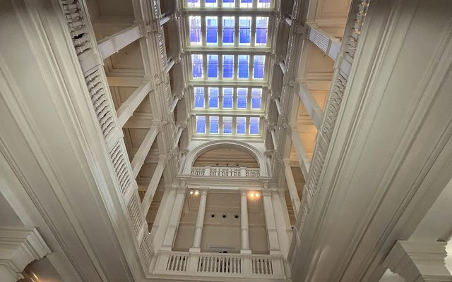
Salt Galataİstanbul · Osmanisch / GegenwartEthnografisches Museum Sinop ArslantorunlarSinop · Osmanisch Museum Sultan Ii. Bayezid Külliyesi SağlıkEdirne · Osmanisch
Museum Sultan Ii. Bayezid Külliyesi SağlıkEdirne · Osmanisch Museum Söğüt Ertuğrul GaziBilecik · OsmanischDenkmalmuseum TaksiyarhisBalıkesir · OsmanischDenkmalmuseum Tarsus St. PaulMersin · Osmanisch / Christlich
Museum Söğüt Ertuğrul GaziBilecik · OsmanischDenkmalmuseum TaksiyarhisBalıkesir · OsmanischDenkmalmuseum Tarsus St. PaulMersin · Osmanisch / Christlich Museum Tofaş Anadolu ArabalarıBursa · Osmanisch / RepublikzeitTokat Atatürk Evi ve Etnografya MüzesiTokat · Osmanisch / Republikzeit
Museum Tofaş Anadolu ArabalarıBursa · Osmanisch / RepublikzeitTokat Atatürk Evi ve Etnografya MüzesiTokat · Osmanisch / Republikzeit Museum Türk Vakıf Hat Sanatlarıİstanbul · OsmanischTürk ve İslam Eserleri Müzesiİstanbul · Seldschukisch / OsmanischMuseum Türk İslam EserleriEdirne · Osmanisch
Museum Türk Vakıf Hat Sanatlarıİstanbul · OsmanischTürk ve İslam Eserleri Müzesiİstanbul · Seldschukisch / OsmanischMuseum Türk İslam EserleriEdirne · Osmanisch Türk İslam Eserleri ve Etnografya MüzesiErzurum · Ilchanidisch / Osmanisch
Türk İslam Eserleri ve Etnografya MüzesiErzurum · Ilchanidisch / Osmanisch Yenişehir Şemaki Evi MüzesiBursa · Osmanisch
Yenişehir Şemaki Evi MüzesiBursa · Osmanisch Yıldız Porselen Fabrikasıİstanbul · Osmanisch
Yıldız Porselen Fabrikasıİstanbul · Osmanisch Museum Ziya GökalpDiyarbakır · Osmanisch
Museum Ziya GökalpDiyarbakır · Osmanisch Museum Çamlık Buharlı Lokomotifİzmir · Osmanisch / Republikzeit
Museum Çamlık Buharlı Lokomotifİzmir · Osmanisch / Republikzeit Museum Çanakkale DenizÇanakkale · Erster WeltkriegÇanakkale Destanı Tanıtım MerkeziÇanakkale · Erster WeltkriegÇanakkale Hilal-i Ahmer Canlandırma AlanıÇanakkale · Erster Weltkrieg
Museum Çanakkale DenizÇanakkale · Erster WeltkriegÇanakkale Destanı Tanıtım MerkeziÇanakkale · Erster WeltkriegÇanakkale Hilal-i Ahmer Canlandırma AlanıÇanakkale · Erster Weltkrieg Museum Çengelhan Rahmi M. KoçAnkara · Osmanisch / Republikzeit
Museum Çengelhan Rahmi M. KoçAnkara · Osmanisch / Republikzeit Museum Çeşmeİzmir · Osmanisch
Museum Çeşmeİzmir · Osmanisch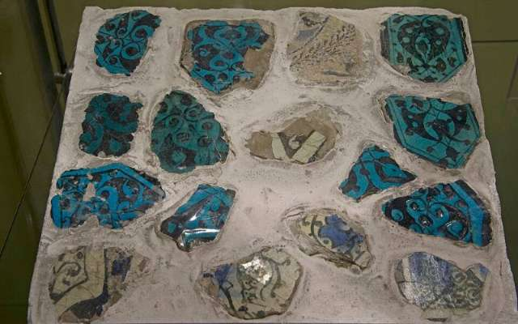
Museum ÇiniKütahya · Germiyaniden / Osmanisch Museum İstanbul Denizİstanbul · Osmanisch / RepublikzeitArchäologisches Museum ŞanlıurfaŞanlıurfa · Neolithikum – Osmanisch
Museum İstanbul Denizİstanbul · Osmanisch / RepublikzeitArchäologisches Museum ŞanlıurfaŞanlıurfa · Neolithikum – OsmanischBefreiung & Republik
1919 – heute · 140 Orte
 Devlet MezarlığıAnkara · RepublikzeitEdirne Büyük SinagogEdirne · Osmanisch (20. Jh.)Ausgrabungsstätte Fethiye KayaköyMuğla · 19–20. Jh.
Devlet MezarlığıAnkara · RepublikzeitEdirne Büyük SinagogEdirne · Osmanisch (20. Jh.)Ausgrabungsstätte Fethiye KayaköyMuğla · 19–20. Jh. Gazi-PavillonDiyarbakır · Akkoyunlu / RepublikzeitLozan Anıtı ve Karaağaç GarıEdirne · Osmanisch / RepublikzeitSt. Antuan-Kircheİstanbul · Osmanisch (20. Jh.)Kloster SümelaTrabzon · Byzantinisch – 20. Jh.Tarihi CezaeviSinop · Osmanisch / Republikzeit
Gazi-PavillonDiyarbakır · Akkoyunlu / RepublikzeitLozan Anıtı ve Karaağaç GarıEdirne · Osmanisch / RepublikzeitSt. Antuan-Kircheİstanbul · Osmanisch (20. Jh.)Kloster SümelaTrabzon · Byzantinisch – 20. Jh.Tarihi CezaeviSinop · Osmanisch / Republikzeit Varda-BrückeAdana · Cumhuriyet öncesi (1912)
Varda-BrückeAdana · Cumhuriyet öncesi (1912) Museum 15 Temmuz DemokrasiAnkara · GegenwartMuseum Adalarİstanbul · Osmanisch / Republikzeit
Museum 15 Temmuz DemokrasiAnkara · GegenwartMuseum Adalarİstanbul · Osmanisch / Republikzeit Atatürk-Haus-Museum AdanaAdana · RepublikzeitMuseum Adatepe ZeytinyağıÇanakkale · Gegenwart
Atatürk-Haus-Museum AdanaAdana · RepublikzeitMuseum Adatepe ZeytinyağıÇanakkale · Gegenwart Ahmet Piriştina Kent Arşivi ve Müzesiİzmir · RepublikzeitMuseum Ahşap EserlerEskişehir · Osmanisch / RepublikzeitAlaeddin Yavaşça Müze-HausKilis · Republikzeit
Ahmet Piriştina Kent Arşivi ve Müzesiİzmir · RepublikzeitMuseum Ahşap EserlerEskişehir · Osmanisch / RepublikzeitAlaeddin Yavaşça Müze-HausKilis · Republikzeit Museum Alagöz KarargâhAnkara · Kurtuluş SavaşıAtatürk-Haus-Museum AlanyaAntalya · RepublikzeitMuseum Alaçam MübadeleSamsun · Republikzeit
Museum Alagöz KarargâhAnkara · Kurtuluş SavaşıAtatürk-Haus-Museum AlanyaAntalya · RepublikzeitMuseum Alaçam MübadeleSamsun · Republikzeit Museum Ankara OyuncakAnkara · Republikzeit
Museum Ankara OyuncakAnkara · Republikzeit Atatürk-Haus-Museum AntalyaAntalya · RepublikzeitEthnografisches Museum AntalyaAntalya · Osmanisch / Neuere Zeit
Atatürk-Haus-Museum AntalyaAntalya · RepublikzeitEthnografisches Museum AntalyaAntalya · Osmanisch / Neuere Zeit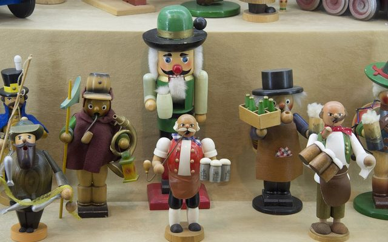
Museum Antalya OyuncakAntalya · Gegenwart Anıtkabir (Atatürk-Mausoleum)Ankara · Republikzeit
Anıtkabir (Atatürk-Mausoleum)Ankara · Republikzeit Museum Ara Gülerİstanbul · Republikzeit
Museum Ara Gülerİstanbul · Republikzeit Arkas Sanat Merkeziİzmir · Gegenwart
Arkas Sanat Merkeziİzmir · Gegenwart Arterİstanbul · GegenwartAskeri Müzeİstanbul · Osmanisch / RepublikzeitAtatürk Evi MüzesiDiyarbakır · Republikzeit
Arterİstanbul · GegenwartAskeri Müzeİstanbul · Osmanisch / RepublikzeitAtatürk Evi MüzesiDiyarbakır · Republikzeit Atatürk Konutu ve Demiryolları MüzesiAnkara · Republikzeit
Atatürk Konutu ve Demiryolları MüzesiAnkara · Republikzeit Atatürk Müzesi (Şişli)İstanbul · RepublikzeitAtatürk ve Etnografya MüzesiUşak · RepublikzeitAtatürk, Redif ve Etnografya MüzesiKocaeli · Osmanisch / Republikzeit
Atatürk Müzesi (Şişli)İstanbul · RepublikzeitAtatürk ve Etnografya MüzesiUşak · RepublikzeitAtatürk, Redif ve Etnografya MüzesiKocaeli · Osmanisch / Republikzeit Museum Atlas 1948 İstanbul Sinemaİstanbul · Republikzeit / Zeitgenössisch
Museum Atlas 1948 İstanbul Sinemaİstanbul · Republikzeit / Zeitgenössisch Museum Aşık VeyselSivas · Republikzeit
Museum Aşık VeyselSivas · Republikzeit Museum Balıkesir Kuvâ-yı MilliyeBalıkesir · Republikzeit
Museum Balıkesir Kuvâ-yı MilliyeBalıkesir · Republikzeit Museum Bandırma Vapuru GemiSamsun · Republikzeit
Museum Bandırma Vapuru GemiSamsun · Republikzeit Museum Batı Cephesi KarargahıKonya · Republikzeit
Museum Batı Cephesi KarargahıKonya · Republikzeit Museum Bayburt BaksıBayburt · ZeitgenössischBeşkonaklar Etnografya Müzesi ve Geleneksel Malatya EviMalatya · Osmanisch / Neuere ZeitEthnografisches Museum BitlisBitlis · Osmanisch / Neuere ZeitMuseum Boğatepe PeynirKars · Gegenwart
Museum Bayburt BaksıBayburt · ZeitgenössischBeşkonaklar Etnografya Müzesi ve Geleneksel Malatya EviMalatya · Osmanisch / Neuere ZeitEthnografisches Museum BitlisBitlis · Osmanisch / Neuere ZeitMuseum Boğatepe PeynirKars · Gegenwart Atatürk-Haus-Museum BursaBursa · Republikzeit
Atatürk-Haus-Museum BursaBursa · Republikzeit Museum Cendere Sanatİstanbul · Çağdaş Sanat
Museum Cendere Sanatİstanbul · Çağdaş Sanat CerModernAnkara · Gegenwart
CerModernAnkara · Gegenwart Museum CumhuriyetAnkara · Republikzeit
Museum CumhuriyetAnkara · Republikzeit Atatürk- und Ethnografiemuseum DenizliDenizli · Republikzeit
Atatürk- und Ethnografiemuseum DenizliDenizli · Republikzeit Museum Devrim ArabalarıEskişehir · Republikzeit
Museum Devrim ArabalarıEskişehir · Republikzeit Museum Elgiz Çağdaş Sanatİstanbul · GegenwartMuseum Emine Göğüş MutfakGaziantep · Osmanisch / Gegenwart
Museum Elgiz Çağdaş Sanatİstanbul · GegenwartMuseum Emine Göğüş MutfakGaziantep · Osmanisch / Gegenwart Atatürk-Haus-Museum ErzurumErzurum · RepublikzeitMuseum Erzurum Resim HeykelErzurum · Republikzeit / Zeitgenössisch
Atatürk-Haus-Museum ErzurumErzurum · RepublikzeitMuseum Erzurum Resim HeykelErzurum · Republikzeit / Zeitgenössisch Museum Eskişehir KurtuluşEskişehir · RepublikzeitMuseum EtnografyaAnkara · Seldschukisch / Osmanisch / Republikzeit
Museum Eskişehir KurtuluşEskişehir · RepublikzeitMuseum EtnografyaAnkara · Seldschukisch / Osmanisch / Republikzeit Museum Eğitim KarikatürleriEskişehir · Republikzeit
Museum Eğitim KarikatürleriEskişehir · Republikzeit Museum Fenerbahçeİstanbul · Republikzeit
Museum Fenerbahçeİstanbul · Republikzeit Florya Atatürk Deniz-Pavillonİstanbul · Republikzeit
Florya Atatürk Deniz-Pavillonİstanbul · Republikzeit Museum GaziSamsun · Republikzeit (1919)
Museum GaziSamsun · Republikzeit (1919) Gaziantep Savunması ve Kahramanlık Panorama MüzesiGaziantep · Republikzeit
Gaziantep Savunması ve Kahramanlık Panorama MüzesiGaziantep · Republikzeit Museum Gökyay Vakfı SatrançAnkara · Gegenwart
Museum Gökyay Vakfı SatrançAnkara · Gegenwart Museum Hafıza 15 Temmuzİstanbul · Gegenwart
Museum Hafıza 15 Temmuzİstanbul · Gegenwart Museum Hava KuvvetleriAnkara · RepublikzeitAtatürk-Haus-Museum HavzaSamsun · RepublikzeitMuseum Hilmi Nakipoğlu Fotoğraf Makineleriİstanbul · Gegenwart
Museum Hava KuvvetleriAnkara · RepublikzeitAtatürk-Haus-Museum HavzaSamsun · RepublikzeitMuseum Hilmi Nakipoğlu Fotoğraf Makineleriİstanbul · Gegenwart Iğdır Soykırım Anıtı ve MüzesiIğdır · RepublikzeitMuseum JandarmaAnkara · Osmanisch / RepublikzeitKahramankazan 15 Temmuz Şehitleri ve Demokrasi MüzesiAnkara · GegenwartMuseum Kandilli Depremİstanbul · Republikzeit
Iğdır Soykırım Anıtı ve MüzesiIğdır · RepublikzeitMuseum JandarmaAnkara · Osmanisch / RepublikzeitKahramankazan 15 Temmuz Şehitleri ve Demokrasi MüzesiAnkara · GegenwartMuseum Kandilli Depremİstanbul · Republikzeit Ethnografisches Museum KaracasuAydın · Neuere Zeit
Ethnografisches Museum KaracasuAydın · Neuere Zeit Atatürk-Haus-Museum KayseriKayseri · Republikzeit
Atatürk-Haus-Museum KayseriKayseri · Republikzeit Museum Kemal Sunalİstanbul · Republikzeit
Museum Kemal Sunalİstanbul · Republikzeit Key Museum (Klasik Otomobil Müzesi)İzmir · Gegenwart
Key Museum (Klasik Otomobil Müzesi)İzmir · Gegenwart Atatürk-Haus-Museum KonyaKonya · RepublikzeitEthnografisches Museum KonyaKonya · Osmanisch / Neuere ZeitMuseum Kurtuluş SavaşıAnkara · RepublikzeitKuruköprü Anıt Müzesi ve Geleneksel Adana EviAdana · Osmanisch / Republikzeit
Atatürk-Haus-Museum KonyaKonya · RepublikzeitEthnografisches Museum KonyaKonya · Osmanisch / Neuere ZeitMuseum Kurtuluş SavaşıAnkara · RepublikzeitKuruköprü Anıt Müzesi ve Geleneksel Adana EviAdana · Osmanisch / Republikzeit Museum Kuva-Yi MilliyeBalıkesir · Republikzeit
Museum Kuva-Yi MilliyeBalıkesir · Republikzeit Museum Kâzım Karabekir Paşaİstanbul · Kurtuluş Savaşı
Museum Kâzım Karabekir Paşaİstanbul · Kurtuluş Savaşı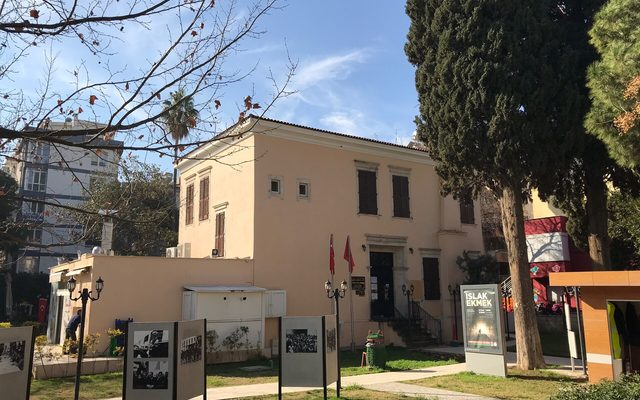
Latife Hanım Köşkü Anı-Hausİzmir · RepublikzeitMuseum LületaşıEskişehir · Osmanisch / GegenwartMuseum MadenZonguldak · 19–20. Jh.Malatya Atatürk Anı Evi ve Etnoğrafya MüzesiMalatya · Republikzeit Museum Masumiyetİstanbul · GegenwartMehmet Akif Ersoy Edebiyat Müze KütüphanesiAnkara · Republikzeit
Museum Masumiyetİstanbul · GegenwartMehmet Akif Ersoy Edebiyat Müze KütüphanesiAnkara · Republikzeit Mehmet Akif Ersoy Hatıra-Hausİstanbul · Republikzeit
Mehmet Akif Ersoy Hatıra-Hausİstanbul · Republikzeit Atatürk-Haus-Museum MersinMersin · Republikzeit
Atatürk-Haus-Museum MersinMersin · Republikzeit Miniatürkİstanbul · Gegenwart
Miniatürkİstanbul · Gegenwart Mke Sanayi ve Teknoloji MüzesiAnkara · Republikzeit
Mke Sanayi ve Teknoloji MüzesiAnkara · Republikzeit Mudanya Mütareke Evi MüzesiBursa · RepublikzeitMüze Gazhaneİstanbul · Osmanisch / GegenwartAtatürk-Haus-Museum Nevşehir HacıbektaşNevşehir · Republikzeit
Mudanya Mütareke Evi MüzesiBursa · RepublikzeitMüze Gazhaneİstanbul · Osmanisch / GegenwartAtatürk-Haus-Museum Nevşehir HacıbektaşNevşehir · Republikzeit Odtü Bilim ve Teknoloji MüzesiAnkara · Gegenwart
Odtü Bilim ve Teknoloji MüzesiAnkara · Gegenwart Odunpazarı Modern MüzeEskişehir · Gegenwart
Odunpazarı Modern MüzeEskişehir · Gegenwart Museum Orhan Kemalİstanbul · Republikzeit
Museum Orhan Kemalİstanbul · Republikzeit Museum Rahmi M. Koçİstanbul · Neuere Zeit
Museum Rahmi M. Koçİstanbul · Neuere Zeit Museum Resim HeykelAnkara · Republikzeit
Museum Resim HeykelAnkara · Republikzeit Atatürk-Haus-Museum RizeRize · Republikzeit
Atatürk-Haus-Museum RizeRize · Republikzeit Museum Sait Faik Abasıyanıkİstanbul · RepublikzeitStadtmuseum Sakıp Sabancı MardinMardin · Osmanisch / RepublikzeitMuseum Sakıp Sabancıİstanbul · Osmanisch / ZeitgenössischSalt Galataİstanbul · Osmanisch / Gegenwart
Museum Sait Faik Abasıyanıkİstanbul · RepublikzeitStadtmuseum Sakıp Sabancı MardinMardin · Osmanisch / RepublikzeitMuseum Sakıp Sabancıİstanbul · Osmanisch / ZeitgenössischSalt Galataİstanbul · Osmanisch / Gegenwart Museum Seka KâğıtKocaeli · Republikzeit
Museum Seka KâğıtKocaeli · Republikzeit Silifke Atatürk Evi ve Etnografya MüzesiMersin · RepublikzeitAtatürk-Haus-Museum SilvanDiyarbakır · Republikzeit
Silifke Atatürk Evi ve Etnografya MüzesiMersin · RepublikzeitAtatürk-Haus-Museum SilvanDiyarbakır · Republikzeit Sivas Atatürk ve Kongre MüzesiSivas · Republikzeit (1919)Museum Tayfun Talipoğlu DaktiloEskişehir · Gegenwart
Sivas Atatürk ve Kongre MüzesiSivas · Republikzeit (1919)Museum Tayfun Talipoğlu DaktiloEskişehir · Gegenwart Taşucu Atatürk-HausMersin · Republikzeit
Taşucu Atatürk-HausMersin · Republikzeit Museum Tcdd Açık Hava Buharlı LokomotifAnkara · Republikzeit
Museum Tcdd Açık Hava Buharlı LokomotifAnkara · Republikzeit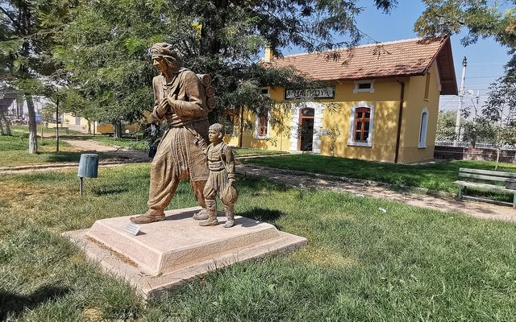
Museum Tcdd Malıköy Tren İstasyonuAnkara · Kurtuluş SavaşıAtatürk-Haus-Museum Tekirdağ MuratlıTekirdağ · RepublikzeitMuseum Tofaş Anadolu ArabalarıBursa · Osmanisch / RepublikzeitTokat Atatürk Evi ve Etnografya MüzesiTokat · Osmanisch / Republikzeit Trabzon Atatürk-PavillonTrabzon · Republikzeit
Trabzon Atatürk-PavillonTrabzon · Republikzeit Trabzon Müzesi (Kostaki Konağı)Trabzon · Anfang 20. Jh. / Mehrere Epochen
Trabzon Müzesi (Kostaki Konağı)Trabzon · Anfang 20. Jh. / Mehrere Epochen Museum Türk Hava KurumuAnkara · Republikzeit
Museum Türk Hava KurumuAnkara · Republikzeit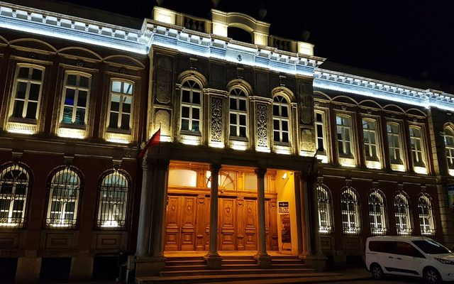
Museum Türkiye İş Bankasıİstanbul · Republikzeit Museum Ulucanlar CezaeviAnkara · Republikzeit
Museum Ulucanlar CezaeviAnkara · Republikzeit Museum Yahya Kemalİstanbul · Republikzeit
Museum Yahya Kemalİstanbul · Republikzeit Yörük Ali Efe Evi MüzesiAydın · Republikzeit
Yörük Ali Efe Evi MüzesiAydın · Republikzeit Museum Yılmaz Büyükerşen Balmumu HeykellerEskişehir · Gegenwart
Museum Yılmaz Büyükerşen Balmumu HeykellerEskişehir · Gegenwart Museum ZaferAfyonkarahisar · Republikzeit
Museum ZaferAfyonkarahisar · Republikzeit Museum Zeki Müren SanatMuğla · Republikzeit
Museum Zeki Müren SanatMuğla · Republikzeit Museum santralistanbul Enerjiİstanbul · RepublikzeitMuseum Çamlık Buharlı Lokomotifİzmir · Osmanisch / Republikzeit
Museum santralistanbul Enerjiİstanbul · RepublikzeitMuseum Çamlık Buharlı Lokomotifİzmir · Osmanisch / Republikzeit Museum Çatalca Mübadeleİstanbul · Republikzeit
Museum Çatalca Mübadeleİstanbul · Republikzeit Museum Çağdaş Cam SanatlarıEskişehir · GegenwartMuseum Çengelhan Rahmi M. KoçAnkara · Osmanisch / Republikzeit
Museum Çağdaş Cam SanatlarıEskişehir · GegenwartMuseum Çengelhan Rahmi M. KoçAnkara · Osmanisch / Republikzeit İlhan Koman Heykel ve Resim MüzesiEdirne · Republikzeit
İlhan Koman Heykel ve Resim MüzesiEdirne · Republikzeit İlter Uzel Tıp ve Diş Hekimliği MüzesiAdana · RepublikzeitMuseum İnönü Savaşları KarargâhEskişehir · Republikzeit
İlter Uzel Tıp ve Diş Hekimliği MüzesiAdana · RepublikzeitMuseum İnönü Savaşları KarargâhEskişehir · Republikzeit İsmet İnönü Evi Müzesiİstanbul · RepublikzeitMuseum İstanbul Denizİstanbul · Osmanisch / Republikzeit
İsmet İnönü Evi Müzesiİstanbul · RepublikzeitMuseum İstanbul Denizİstanbul · Osmanisch / Republikzeit Museum İstanbul Havacılıkİstanbul · Republikzeit
Museum İstanbul Havacılıkİstanbul · Republikzeit İstanbul Modernİstanbul · Republikzeit / Zeitgenössisch
İstanbul Modernİstanbul · Republikzeit / Zeitgenössisch Museum İstanbul Oyuncakİstanbul · GegenwartMuseum İzmir Atatürkİzmir · Republikzeit
Museum İstanbul Oyuncakİstanbul · GegenwartMuseum İzmir Atatürkİzmir · Republikzeit İzmir Kültür Sanat Fabrikasıİzmir · Republikzeit / ZeitgenössischMuseum İzmir Resim Heykelİzmir · Republikzeit / Zeitgenössisch
İzmir Kültür Sanat Fabrikasıİzmir · Republikzeit / ZeitgenössischMuseum İzmir Resim Heykelİzmir · Republikzeit / Zeitgenössisch İzmit Deprem Anma ve Farkındalık MüzesiKocaeli · Gegenwart
İzmit Deprem Anma ve Farkındalık MüzesiKocaeli · Gegenwart Atatürk-Haus-Museum ŞebinkarahisarGiresun · Republikzeit
Atatürk-Haus-Museum ŞebinkarahisarGiresun · Republikzeit